<!doctype html>
<html lang="en">
<head>
  <meta charset="utf-8">
  <meta name="viewport" content="width=device-width, initial-scale=1">
  <title>arxiv digest — 2026-10-23</title>
  <style>
:root {
  --bg: #ffffff;
  --fg: #1f2328;
  --muted: #59636e;
  --border: #d0d7de;
  --card: #f6f8fa;
  --link: #0969da;
}
body {
  max-width: 980px;
  margin: 0 auto;
  padding: 2rem 1rem 5rem;
  font-family: -apple-system, BlinkMacSystemFont, "Segoe UI", Helvetica, Arial, sans-serif;
  line-height: 1.55;
  color: var(--fg);
  background: var(--bg);
}
a { color: var(--link); }
img { max-width: 100%; height: auto; }
pre, code { background: var(--card); border-radius: 6px; }
pre { padding: 1rem; overflow-x: auto; }
blockquote { border-left: 4px solid var(--border); padding-left: 1rem; color: var(--muted); }
details { margin: 0.6rem 0; }
summary { cursor: pointer; font-weight: 600; }
.paper-figures-scroll {
  display: flex;
  gap: 1rem;
  overflow-x: auto;
  overscroll-behavior-x: contain;
  padding: 0.75rem 0.25rem 1rem;
  margin: 1rem 0 1.25rem;
  border-top: 1px solid var(--border);
  border-bottom: 1px solid var(--border);
  scroll-snap-type: x proximity;
}
.paper-figure-card {
  flex: 0 0 min(260px, 72vw);
  scroll-snap-align: start;
  background: var(--card);
  border: 1px solid var(--border);
  border-radius: 12px;
  padding: 0.55rem;
}
.paper-figure-card img {
  display: block;
  width: 100%;
  max-height: 240px;
  object-fit: contain;
  background: white;
  border-radius: 8px;
}
.paper-figure-caption {
  display: block;
  margin-top: 0.5rem;
  color: var(--muted);
  font-size: 0.85rem;
}
.figure-strip-hint {
  color: var(--muted);
  font-size: 0.9rem;
  margin-bottom: -0.3rem;
}
</style>
  <script>
    window.MathJax = {
      tex: {
        inlineMath: [['$', '$'], ['\\(', '\\)']],
        displayMath: [['$$', '$$'], ['\\[', '\\]']],
        processEscapes: true,
        processEnvironments: true
      },
      options: {
        skipHtmlTags: ['script', 'noscript', 'style', 'textarea', 'pre', 'code'],
        ignoreHtmlClass: 'tex2jax_ignore',
        processHtmlClass: 'tex2jax_process'
      }
    };
  </script>
  <script id="MathJax-script" async
    src="https://cdn.jsdelivr.net/npm/mathjax@3/es5/tex-chtml.js"></script>
</head>
<body>
<header style="background-color: #333; color: white; padding: 15px; margin-bottom: 20px;">
  <h1 style="margin: 0; font-size: 24px;">
    <a href="https://ochelpan.github.io/arXiv_clean/" style="color: white; text-decoration: none;">Main</a>
  </h1>
</header>

<h1>Daily arXiv Report</h1>

<hr>
<p>
<a href="index.html">← Index</a>
 · <a href="papers_01.html">← Previous</a> · <a href="papers_03.html">Next →</a>
</p>
<hr>

<h2>Papers 21–40</h2>
<p><a id="paper-2610.29316"></a></p>
<h3 id="boundary-exceptional-point-driven-chiral-switch-of-topological-edge-states"><a href="http://arxiv.org/abs/2610.29316v1">Boundary exceptional point driven chiral switch of topological edge states</a></h3>
<p><strong>Authors:</strong> Bikashkali Midya, Barsa Rani Sahu<br>
<strong>Type:</strong> theory · <strong>Category:</strong> other · <strong>PDF:</strong> <a href="https://arxiv.org/pdf/2610.29316v1">https://arxiv.org/pdf/2610.29316v1</a><br>
<strong>Analysis basis:</strong> full PDF text, analyzed in chunks
<strong>Topic relevance:</strong> <code>analog quantum simulation</code> <strong>3/5</strong> · <code>driven-dissipative phase transition</code> <strong>3/5</strong> · <code>methods for driven-dissipative</code> <strong>3/5</strong> · <code>correlated / nonlocal dissipation</code> <strong>2/5</strong> · <code>non-equilibrium universality</code> <strong>2/5</strong> · <code>quantum measurements</code> <strong>1/5</strong></p>
<div class="figure-strip-hint">↔ Scroll figures horizontally</div>
<div class="paper-figures-scroll">
<figure class="paper-figure-card">
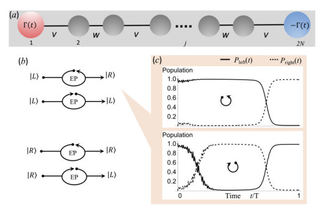
<figcaption class="paper-figure-caption"><b>Fig 1.</b> FIG. 1. Scheme of boundary-driven chiral switch of topological edge states in a finite non-Hermitian lattice. (a) Schematic representation of a finite SSH chain with alternating intra-cell hopping v and inter-cell hopping w. Localized non-Hermitian potentials Γ(t) and −Γ(t) are applied at the leftmost and rightmost sites, respectively, while leaving the bulk entirely Hermitian. (b) Diagram of the asymmetric state switching and returning induced by dynamically encircling the boundary EPs. Depending on the direction of parameter encirclement (chirality of the loop), an initial state localized at the left edge |L⟩or right edge |R⟩is either cleanly transferred to the opposite boundary or...</figcaption>
</figure>
<figure class="paper-figure-card">
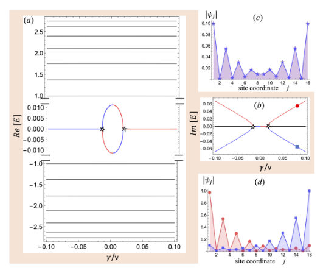
<figcaption class="paper-figure-caption"><b>Fig 2.</b> FIG. 2. Energy spectrum, boundary EPs, and spatial field profiles of a finite non-Hermitian SSH lattice with 2N = 16, w/v = 1.8, δ = 0. (a) Real part Re[E], and (b) imaginary part Im[E] of the energy spectrum, obtained through exact numerical diagonalization, are plotted as a function of the dimensionless non-Hermitian strength γ/v. The bulk bands remain entirely real, and completely unperturbed by the localized non-Hermitian perturbations. Within the mid-gap region, the topological edge states undergo a localized phase transition. The two distinct boundary-induced EPs, where both eigenvalues and eigenvectors coalesce, are explicitly marked by ⋆. The edge states exhibit purely real energies...</figcaption>
</figure>
<figure class="paper-figure-card">
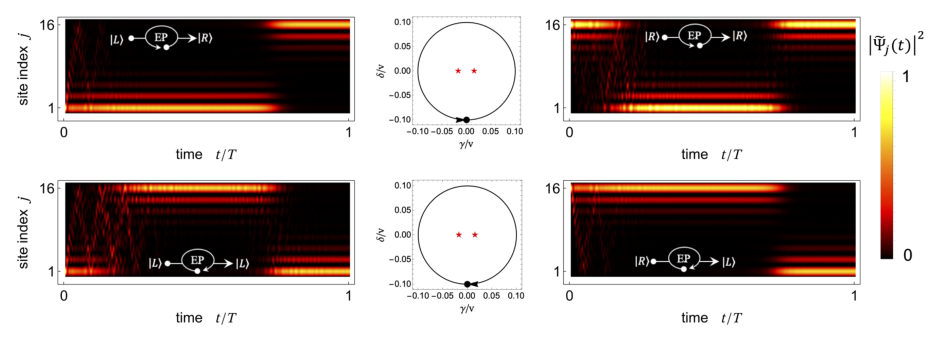
<figcaption class="paper-figure-caption"><b>Fig 3.</b> FIG. 3. Time-resolved dynamical chiral state transfer and return via EPs encirclement. Center column: closed parameter trajectories in the (γ/v, δ/v) plane enclosing the two boundary-induced EPs (marked by red stars). The black dots denote the starting points of the dynamic cycle, and the arrows indicate the loop chirality: ⟲(top) and ⟳(bottom). Left column: the dynamic evolution of the initial single-site excitation situated at the left edge j = 1, expressed as a function of the normalized time t/T. Under the ⟳protocol (top left), the mode smoothly transits across the bulk to completely re-localize at the opposite right boundary (j = 16). Under the ⟲protocol (bottom left), the population...</figcaption>
</figure>
<figure class="paper-figure-card">
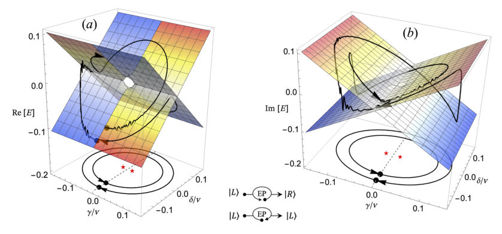
<figcaption class="paper-figure-caption"><b>Fig 4.</b> FIG. 4. Nonadiabatic dynamical energy trajectories on edge-state eigenenergy Riemann surfaces. (a) Real part, and (b) imaginary part of the instantaneous midgap energy eigenvalues plotted as a function of γ/v and δ/v. The red (blue) surface represents gain (loss) sheet with positive (negative ) imaginary part; bulk eigenenergies are omitted for clarity. The intersecting, non-Hermitian Riemann sheets illustrate the characteristic branch-point singularity dictated by the boundary-induced EPs. The projection on the base plane explicitly marks the positions of the two coalescent exceptional points (red stars). The solid black curves on the Riemann surfaces track the dynamic evolution of the...</figcaption>
</figure>
<figure class="paper-figure-card">
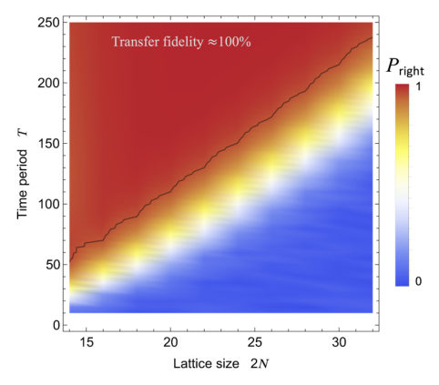
<figcaption class="paper-figure-caption"><b>Fig 5.</b> FIG. 5. Pseudo color plot of the left-to-right topological edge state transfer fidelity as a function of the encircling time period T and the lattice size 2N. The color scale quantifies Pright(t = T), the transfer fidelity, ranging from 0 (low fidelity, blue) to 1 (perfect fidelity, red), calculated for a fixed ⟲loop radius r = 0.1v enclosing the EPs. The solid black line highlights the threshold boundary distinguishing the high-fidelity topological pumping regime from the state mixing regions. Notably, the threshold period scales linearly with the system size 2N, confirming the high scalability and long-range efficiency of the boundary-driven switching protocol across extended passive...</figcaption>
</figure>
</div>

<p><strong>Summary.</strong> The paper theoretically investigates controlling topological edge states in a finite SSH chain by introducing non-Hermitian potentials only at the boundaries. By dynamically encircling the resulting exceptional points, the system achieves a robust, chiral state-transfer protocol. This method allows for directional pumping of edge excitations without perturbing the bulk energy spectrum, offering a blueprint for topological quantum switches.</p>
<p><strong>Why it may be interesting.</strong> This work provides a concrete, controllable mechanism for topological state manipulation using boundary engineering, which is highly relevant for designing robust quantum devices in open quantum systems.</p>
<details>
<summary>Detailed structure</summary>
<p><strong>Main problem.</strong> To establish a minimal, experimentally verifiable framework for a large-scale topological chiral switch using boundary non-Hermiticity while ensuring the bulk energy spectrum remains unperturbed.</p>
<p><strong>Main result.</strong> Dynamically encircling boundary-induced exceptional points (EPs) facilitates a robust, chiral edge state-transfer protocol, allowing unidirectional state transfer between opposite edges.</p>
<p><strong>Method.</strong> The study analytically derives EP coordinates and uses time-dependent Schrödinger equation simulations to track state populations during closed parameter loops.</p>
<p><strong>Model / system.</strong> The system is a finite Su-Schrieffer-Heeger (SSH) chain lattice modeled by a Hamiltonian $H = H_{	ext{bulk}} + H_{	ext{boundary}}(t)$, where non-Hermiticity is confined to the boundaries.</p>
<p><strong>Key observables.</strong> Normalized site populations ($P_{	ext{left}}, P_{	ext{right}}$), the dynamical energy $E(t)$, and the transfer fidelity.</p>
<p><strong>Important parameters / regimes.</strong> The hopping amplitudes ($v, w$), the non-Hermitian gain/loss parameters ($\gamma(t)$), and the loop chirality ($\circlearrowright$ vs $\circlearrowleft$).</p>
<p><strong>Assumptions / limitations.</strong> The non-Hermiticity is strictly confined to the boundaries, and the bulk Hamiltonian $H_{	ext{bulk}}$ is strictly Hermitian.</p>
<p><strong>Figures summary.</strong> Figures illustrate the splitting of edge state energies ($E_+, E_-$), the time evolution of site populations during chiral switching, and the complex trajectory of the dynamical energy on Riemann surfaces.</p>
<p><strong>Paper structure.</strong> The paper progresses from defining the non-Hermitian SSH model and deriving EP locations to simulating the state transfer protocol by dynamically encircling these EPs, demonstrating chiral control.</p>
</details>
<details>
<summary>Abstract</summary>
<p>We theoretically investigate the interplay of topology and localized non-Hermiticity in a finite Su-Schrieffer-Heeger chain characterized by non-Hermitian potentials at its boundaries. By tuning the boundary gain and loss parameters, we exploit the finite-size hybridization of two mid-gap topological edge states to analytically derive the exact coordinates of boundary-induced exceptional points (EPs), $Γ_{\rm EP}=\pm i v^{N}/w^{N-1}$, at which these states undergo coalescence. We demonstrate that dynamically encircling these boundary EPs facilitates a robust, chiral edge state-transfer protocol. Depending on the orientation of the encircling loop, this protocol allows a topological edge state localized at one boundary to be either transferred to the opposite edge with perfect fidelity or returned to its starting position through a double switching process. Importantly, since the non-Hermiticity remains strictly confined to the boundaries, this chiral transport occurs without affecting the energy spectrum of the bulk bands. These results establish a minimal framework for a large-scale topological chiral switch that is experimentally verifiable and capable of being controlled through boundary non-Hermitian driving.</p>
</details>
<p><sub><a href="#top">↑ back to top</a></sub></p>

<p><a id="paper-2610.29670"></a></p>
<h3 id="energy-fed-commitment-a-minimal-model-of-random-selection-followed-by-reinforcement"><a href="http://arxiv.org/abs/2610.29670v1">Energy-fed commitment: a minimal model of random selection followed by reinforcement</a></h3>
<p><strong>Authors:</strong> Haidar Issa Abbas<br>
<strong>Type:</strong> theory · <strong>Category:</strong> statistical mechanics · <strong>PDF:</strong> <a href="https://arxiv.org/pdf/2610.29670v1">https://arxiv.org/pdf/2610.29670v1</a><br>
<strong>Analysis basis:</strong> full PDF text, analyzed in chunks
<strong>Topic relevance:</strong> <code>driven-dissipative phase transition</code> <strong>3/5</strong> · <code>non-equilibrium universality</code> <strong>3/5</strong> · <code>Keldysh / 2PI / non-Gaussian methods</code> <strong>2/5</strong> · <code>methods for driven-dissipative</code> <strong>2/5</strong> · <code>quantum measurements</code> <strong>2/5</strong> · <code>Frenkel-Kontorova</code> <strong>1/5</strong> · <code>scars &amp; prethermalization</code> <strong>1/5</strong></p>
<div class="figure-strip-hint">↔ Scroll figures horizontally</div>
<div class="paper-figures-scroll">
<figure class="paper-figure-card">
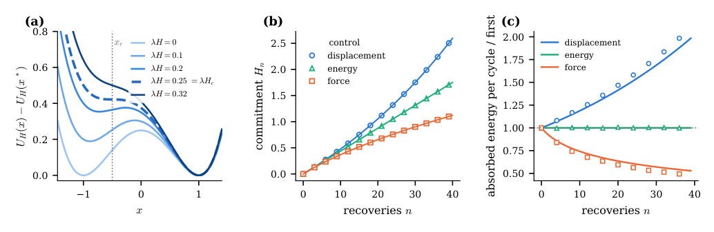
<figcaption class="paper-figure-caption"><b>Fig 1.</b> Figure 1: Landscape and control mode. (a) Landscape UH of the quartic model; the alternative minimum and the saddle merge at λHc = 1/4 (dashed); the irreversibility threshold is xr = −1/2 (dotted). (b) Commitment under displacement, energy and force control with a matched first pulse (kBT = 0.01, λ = 0.6): simulation (symbols) and closure (6) (lines). (c) Energy injected per cycle (lines) and mean recovery heat (symbols), relative to the first cycle: rising under displacement control, constant under energy control, falling under force control.</figcaption>
</figure>
<figure class="paper-figure-card">
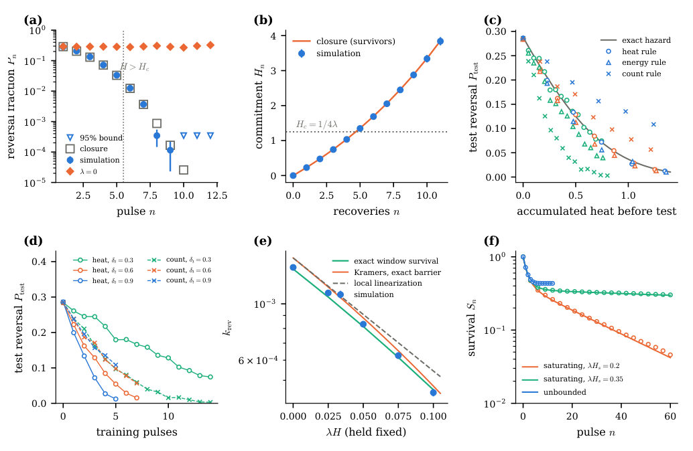
<figcaption class="paper-figure-caption"><b>Fig 2.</b> Figure 2: Numerical verification (kBT = 0.03, δ = 0.9, λ = 0.2 unless stated). (a) Reversal fraction per identical pulse with the ratchet and without it (λ = 0), binomial errors; open triangles, 95% upper bound where no reversal occurred; open squares, closure with the exact window hazard (10), no fit. (b) Mean commitment of survivors, simulation (± s.d.) and closure; dotted line, Hc. (c) Test reversal (δ = 0.9) after training at amplitudes 0.3 (green), 0.6 (orange) and 0.9 (blue) under three reinforcement rules (heat, injected energy, pulse count), against the accumulated recovery heat measured in each run; line, exact hazard. (d) The same test against the number of training pulses, heat...</figcaption>
</figure>
<figure class="paper-figure-card">
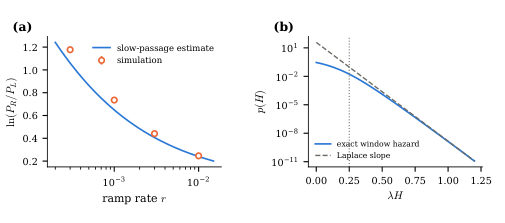
<figcaption class="paper-figure-caption"><b>Fig 3.</b> Figure 3: (a) Selection odds versus ramp rate at identical final control parameters, simulation of Eq. (14) and Eq. (15). (b) Exact window hazard p versus λH (kBT = 0.03, δ = 0.9) and the slope of the splitting bound of Proposition 1; dotted line, lock-in.</figcaption>
</figure>
</div>

<p><strong>Summary.</strong> This work develops a minimal stochastic model to quantify how a system 'commits' to a state after an instability, making reversal exponentially difficult. The commitment grows based on the energy absorbed during perturbations, and this growth rate is shown to depend fundamentally on how the system is driven (e.g., displacement vs. force control). It provides quantitative predictions for structural memory in non-equilibrium physics.</p>
<p><strong>Why it may be interesting.</strong> The concept of energy-fed memory or 'commitment' in non-equilibrium systems is highly relevant to understanding structural selection in complex physical systems, bridging concepts from statistical mechanics to irreversible processes.</p>
<details>
<summary>Detailed structure</summary>
<p><strong>Main problem.</strong> The paper investigates a minimal stochastic model describing how a randomly selected state, following a symmetric instability, becomes progressively harder to reverse due to energy-fed reinforcement.</p>
<p><strong>Main result.</strong> The commitment growth depends critically on the driving protocol (displacement, energy, or force control), leading to different rates of work absorption and exponential suppression of reversal.</p>
<p><strong>Method.</strong> The analysis uses stochastic differential equations, Kramers' formula for transition rates, and master equation techniques to model the evolution of the commitment parameter.</p>
<p><strong>Model / system.</strong> The system is modeled using a quartic potential well undergoing stochastic dynamics. Commitment ($H$) increases based on the energy released during structural recovery, acting as a stiffening parameter in the potential.</p>
<p><strong>Key observables.</strong> Commitment ($H$), Reversal Rate ($k(H)$), Work Absorbed per cycle, Survival Probability ($S_N$), and Selection Odds ($\ln(P_R/P_L)$).</p>
<p><strong>Important parameters / regimes.</strong> The coupling constant ($\lambda$), temperature ($k_B T$), and the control protocol (displacement, energy, force).</p>
<p><strong>Assumptions / limitations.</strong> The model relies on a phenomenological closure where the energy released during recovery directly reinforces the chosen branch, and it assumes conservative dynamics between perturbations.</p>
<p><strong>Figures summary.</strong> Figures illustrate the potential landscape evolution, the decay of reversal fractions under different reinforcement rules, and comparisons between simulation results and theoretical slow-passage estimates for selection odds.</p>
<p><strong>Paper structure.</strong> The paper develops the stochastic model, analyzes the energy balance and control dependence of commitment growth, derives the reversal rate using Kramers' formula, and finally compares the predictions of the energy-fed model against alternative selection mechanisms.</p>
</details>
<details>
<summary>Abstract</summary>
<p>When a symmetric instability is crossed, fluctuations choose one of several equivalent branches. We study a minimal stochastic model of what can then make that choice progressively harder to undo. After selection, the stiffness of the selected state grows in proportion to the energy released each time the structure recovers from a perturbation; in this conservative model that energy equals, up to small and explicitly computed terms, the work absorbed from the perturbing agent. The model is a phenomenological closure with one coupling constant. That energy reinforces a branch already chosen, rather than choosing it, is an assumption of the model, which we state and do not derive. Its consequences are quantitative. The growth of commitment depends on how the structure is driven: geometric under displacement control, linear under energy control and sublinear under force control, so that committed states absorb more work per cycle under displacement control and less under force control. Reinforcement suppresses reversal exponentially; beyond a finite commitment the alternative minimum disappears and reversals become rare crossings of an irreversibility threshold. With unbounded reinforcement a choice is retained forever with positive probability under stated conditions; with saturating reinforcement retention is finite, with a lifetime that grows exponentially with the saturation level. Exact first-passage calculations agree with stochastic simulations; these verify the closure and its analysis but cannot test the physical postulate. We identify the experiments that could: protocols that separate absorbed energy from the number of perturbations, and driven steady states with nonzero housekeeping heat, in which heat and absorbed work differ.</p>
</details>
<p><sub><a href="#top">↑ back to top</a></sub></p>

<p><a id="paper-2610.29902"></a></p>
<h3 id="morphological-instability-and-negative-geometric-friction-from-contact-with-active-and-driven-particles"><a href="http://arxiv.org/abs/2610.29902v1">Morphological instability and negative geometric friction from contact with active and driven particles</a></h3>
<p><strong>Authors:</strong> Forouh Maleki, Christian Maes<br>
<strong>Type:</strong> theory · <strong>Category:</strong> statistical mechanics · <strong>PDF:</strong> <a href="https://arxiv.org/pdf/2610.29902v1">https://arxiv.org/pdf/2610.29902v1</a><br>
<strong>Analysis basis:</strong> full PDF text, analyzed in chunks
<strong>Topic relevance:</strong> <code>Frenkel-Kontorova</code> <strong>3/5</strong> · <code>driven-dissipative phase transition</code> <strong>3/5</strong> · <code>non-equilibrium universality</code> <strong>3/5</strong> · <code>Keldysh / 2PI / non-Gaussian methods</code> <strong>2/5</strong> · <code>methods for driven-dissipative</code> <strong>2/5</strong> · <code>correlated / nonlocal dissipation</code> <strong>1/5</strong></p>
<div class="figure-strip-hint">↔ Scroll figures horizontally</div>
<div class="paper-figures-scroll">
<figure class="paper-figure-card">
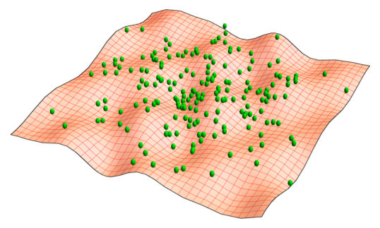
<figcaption class="paper-figure-caption"><b>Fig 1.</b> FIG. 1. Cartoon of a surface with particles. The metric also enters their time-symmetric dynamical</figcaption>
</figure>
<figure class="paper-figure-card">
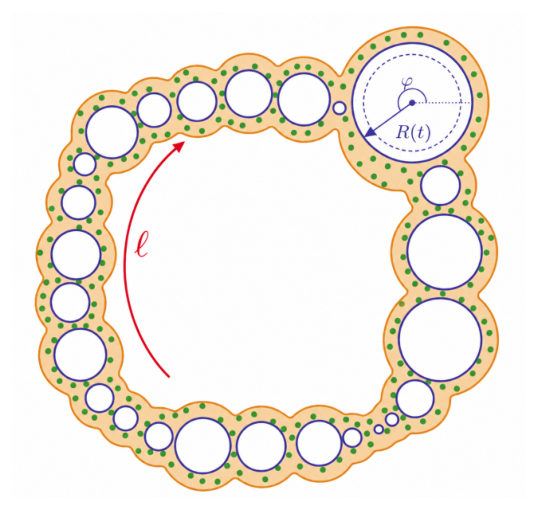
<figcaption class="paper-figure-caption"><b>Fig 2.</b> FIG. 2. A membrane as formed by breathing circles with radius Rℓ(t). The subscript denotes the</figcaption>
</figure>
<figure class="paper-figure-card">
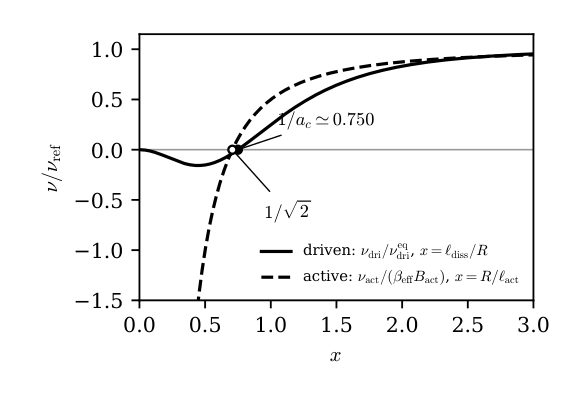
<figcaption class="paper-figure-caption"><b>Fig 3.</b> FIG. 3. Normalized geometric friction for U(φ) = K cos φ. Solid: driven particles, νdri/νeq dri (the value at v0 = 0) versus x = ℓdiss/R. Dashed: run-and-tumble particles with constant α,</figcaption>
</figure>
</div>

<p><strong>Summary.</strong> This paper develops a theoretical framework to quantify the geometric friction exerted by active and driven particles on their deformable environment. By analyzing the linear response to metric perturbations, the authors show that non-equilibrium driving can cause this friction to become negative. This negative friction signals a mechanical instability, suggesting a new mechanism by which active matter can actively reshape its surroundings.</p>
<p><strong>Why it may be interesting.</strong> The concept of non-equilibrium forces inducing negative friction is highly relevant to understanding active matter systems, biological membranes, and soft matter physics, which often involve non-Markovian or non-equilibrium dynamics.</p>
<details>
<summary>Detailed structure</summary>
<p><strong>Main problem.</strong> The paper investigates how active and driven particles interacting with a deformable substrate can induce a geometric friction that may become negative, leading to morphological instability.</p>
<p><strong>Main result.</strong> Negative geometric friction arises when the system is driven far from equilibrium, suggesting that active matter can actively reshape its environment by softening its mechanical constraints.</p>
<p><strong>Method.</strong> The analysis employs linear response theory to calculate the geometric friction ($
u$) by comparing the expected force on a deforming manifold versus a fixed one, utilizing adiabatic elimination for particle dynamics.</p>
<p><strong>Model / system.</strong> The system models $N$ point particles moving on an evolving Riemannian manifold, exemplified by a breathing circle. Particle dynamics are treated in the overdamped limit, coupling particle motion to the metric evolution.</p>
<p><strong>Key observables.</strong> Geometric friction ($
u(R)$), which characterizes the linear response of the medium to manifold motion; the sign of this friction.</p>
<p><strong>Important parameters / regimes.</strong> Driving velocity ($v_0$), friction coefficient ($\mu$), temperature ($k_B T$), and dimensionless parameters like $a = eta R v_0 / \mu$ that determine the non-equilibrium regime.</p>
<p><strong>Assumptions / limitations.</strong> The analysis assumes the adiabatic limit (slow geometric evolution) and focuses on weak coupling to the metric perturbation.</p>
<p><strong>Figures summary.</strong> Figures illustrate the physical concept of particles reshaping the substrate metric and show the normalized geometric friction ($
u/
u_{ref}$) versus a dimensionless parameter, demonstrating the transition to negative friction for driven/active particles.</p>
<p><strong>Paper structure.</strong> The paper develops the theory by first establishing the general framework for geometric response, then deriving the friction for specific models (driven thermal and run-and-tumble particles) using Fourier mode decomposition, and finally contrasting the equilibrium (positive) versus non-equilibrium (potentially negative) behavior.</p>
</details>
<details>
<summary>Abstract</summary>
<p>Overdamped particles on a deformable substrate induce a geometric friction through their response to metric perturbations. Nonequilibrium dynamics couples such a perturbation to kinetic effects, which can flip that friction negative, softening the substrate's rigidity and favoring invaginations and evaginations. A breathing circle, with local curvature radius as dynamical variable, is the main example. At equilibrium the friction reduces to an ordinary potential response and stays positive. Geometric response emerges as a new route by which active and driven matter reshape their environment.</p>
</details>
<p><sub><a href="#top">↑ back to top</a></sub></p>

<p><a id="paper-2610.29084"></a></p>
<h3 id="algebraic-criteria-for-complete-relaxation-in-autonomous-and-periodically-driven-open-quantum-systems"><a href="http://arxiv.org/abs/2610.29084v1">Algebraic criteria for complete relaxation in autonomous and periodically driven open quantum systems</a></h3>
<p><strong>Authors:</strong> Paul Menczel, Kay Brandner<br>
<strong>Type:</strong> theory · <strong>Category:</strong> statistical mechanics · <strong>PDF:</strong> <a href="https://arxiv.org/pdf/2610.29084v1">https://arxiv.org/pdf/2610.29084v1</a><br>
<strong>Analysis basis:</strong> full PDF text, analyzed in chunks
<strong>Topic relevance:</strong> <code>driven-dissipative phase transition</code> <strong>3/5</strong> · <code>methods for driven-dissipative</code> <strong>3/5</strong> · <code>non-equilibrium universality</code> <strong>2/5</strong> · <code>Keldysh / 2PI / non-Gaussian methods</code> <strong>1/5</strong> · <code>analog quantum simulation</code> <strong>1/5</strong> · <code>correlated / nonlocal dissipation</code> <strong>1/5</strong> · <code>quantum measurements</code> <strong>1/5</strong> · <code>scars &amp; prethermalization</code> <strong>1/5</strong></p>
<div class="figure-strip-hint">↔ Scroll figures horizontally</div>
<div class="paper-figures-scroll">
<figure class="paper-figure-card">
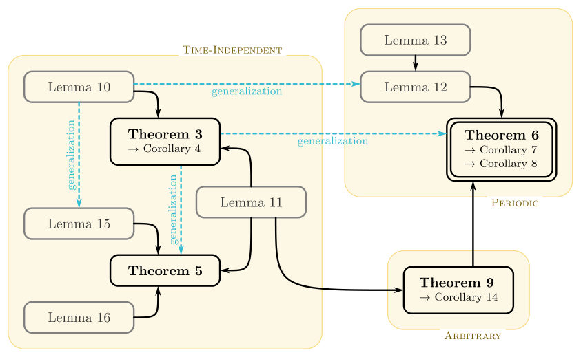
<figcaption class="paper-figure-caption"><b>Fig 1.</b> Figure 1. Interdependencies among the theorems, corollaries, and lemmas in our paper, grouped according to whether they apply to time-independent generators, periodic generators, or arbitrary time-dependent generators. Our main result is Theorem 6. Solid arrows indicate that a theorem or lemma is used in the proof of another result. Dashed blue arrows indicate that one result is a generalization of another.</figcaption>
</figure>
</div>

<p><strong>Summary.</strong> This paper develops algebraic criteria to determine when an open quantum system, governed by the GKSL master equation, achieves 'complete relaxation' to a unique steady state. It provides simplified, verifiable conditions for both time-independent and periodically driven systems. The results are significant for understanding the long-time dynamics of quantum processes in physics.</p>
<p><strong>Why it may be interesting.</strong> This work provides powerful, purely algebraic tools to diagnose the long-term behavior of complex open quantum systems, which is crucial for understanding thermalization, quantum computing decoherence, and quantum thermodynamics.</p>
<details>
<summary>Detailed structure</summary>
<p><strong>Main problem.</strong> The paper aims to derive sufficient, elementary mathematical criteria that guarantee 'complete relaxation' in open quantum systems, meaning the system converges to a unique long-time state regardless of its initial conditions.</p>
<p><strong>Main result.</strong> For periodically driven systems, a new criterion is established: complete relaxation is guaranteed if an algebraic condition on the Lindblad operators is met at any single instant within the driving period, provided the generator is continuous.</p>
<p><strong>Method.</strong> The approach relies on analyzing the algebraic structure (using the concept of the algebra generated by operators) of the Lindblad operators and the Hamiltonian within the Gorini-Kossakowski-Sudarshan-Lindblad (GKSL) master equation framework.</p>
<p><strong>Model / system.</strong> The study focuses on open quantum systems modeled by the GKSL master equation, applicable to both autonomous (time-independent) and periodically driven systems on finite-dimensional Hilbert spaces. The dynamics are governed by the time-dependent Lindblad generator.</p>
<p><strong>Key observables.</strong> Complete relaxation (convergence to a unique long-time state), the spectral range of associated operators, and the algebraic structure of the Lindblad operators.</p>
<p><strong>Important parameters / regimes.</strong> The driving period $T$ (for periodic systems), the Lindblad operators $A_\mu$, and the Hamiltonian $\hat{H}_t$.</p>
<p><strong>Assumptions / limitations.</strong> The analysis is restricted to finite-dimensional Hilbert spaces. The criterion for periodic driving is sufficient, and the general time-dependent case requires analyzing the full dynamical map.</p>
<p><strong>Figures summary.</strong> Figure 1 provides an overview illustrating the interdependencies between the derived theorems based on whether the generator is time-independent, periodic, or arbitrarily time-dependent.</p>
<p><strong>Paper structure.</strong> The paper systematically develops criteria for relaxation, first addressing the autonomous case with algebraic conditions on the Lindblad operators. It then extends these results to the periodically driven case, yielding a simplified criterion, and finally discusses the more complex requirements for general time-dependent driving.</p>
</details>
<details>
<summary>Abstract</summary>
<p>We derive sufficient criteria that guarantee convergence of open quantum system dynamics to a unique long-time state independent of the initial conditions. We refer to this behavior as complete relaxation. Focusing on systems described by Gorini-Kossakowski-Sudarshan-Lindblad (GKSL) master equations on finite-dimensional Hilbert spaces, our approach uses only elementary mathematical arguments. For autonomous systems, we recover three previously derived relaxation criteria, which can be expressed as algebraic conditions on the Lindblad operators and the Hamiltonian entering the GKSL equation. For periodically driven systems, we obtain a new criterion involving a similar algebraic condition and a local continuity requirement on the time-dependent GKSL generator. This result implies an earlier criterion for complete relaxation formulated in Ref. [J. Phys. A 52, 43LT01 (2019)]. We also discuss implications of our approach for periodically modulated classical master equations, as well as extensions to driven systems without a periodicity constraint.</p>
</details>
<p><sub><a href="#top">↑ back to top</a></sub></p>

<p><a id="paper-2610.29865"></a></p>
<h3 id="from-traveling-waves-to-synthetic-gauge-fields-a-field-free-route-to-superconducting-diode-effect"><a href="http://arxiv.org/abs/2610.29865v1">From Traveling Waves to Synthetic Gauge Fields: A Field-Free Route to Superconducting Diode Effect</a></h3>
<p><strong>Authors:</strong> Latu Kalita, Koustav Roy, Bilal Tanatar, Saurabh Basu<br>
<strong>Type:</strong> theory · <strong>Category:</strong> other · <strong>PDF:</strong> <a href="https://arxiv.org/pdf/2610.29865v1">https://arxiv.org/pdf/2610.29865v1</a><br>
<strong>Analysis basis:</strong> full PDF text, analyzed in chunks
<strong>Topic relevance:</strong> <code>analog quantum simulation</code> <strong>3/5</strong> · <code>driven-dissipative phase transition</code> <strong>3/5</strong> · <code>methods for driven-dissipative</code> <strong>3/5</strong> · <code>Keldysh / 2PI / non-Gaussian methods</code> <strong>2/5</strong> · <code>non-equilibrium universality</code> <strong>2/5</strong></p>
<div class="figure-strip-hint">↔ Scroll figures horizontally</div>
<div class="paper-figures-scroll">
<figure class="paper-figure-card">
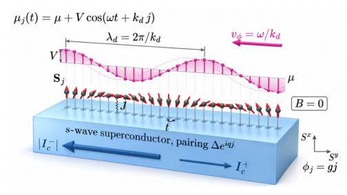
<figcaption class="paper-figure-caption"><b>Fig 1.</b> FIG. 1. Schematic of the driven helical Shiba chain. Mag- netic adatoms with spins Sj rotating by ϕj = gj are exchange- coupled (J) to electrons hopping with amplitude t on top of an s-wave superconductor that induces pairing ∆eiqj with Cooper-pair momentum q. The chemical potential is modu- lated by a traveling wave of wavelength 2π/kd, which moves with phase velocity vϕ = ω/kd. The wave renders the two crit- ical currents unequal, I+ c ≠∣I− c ∣, without any magnetic field.</figcaption>
</figure>
<figure class="paper-figure-card">
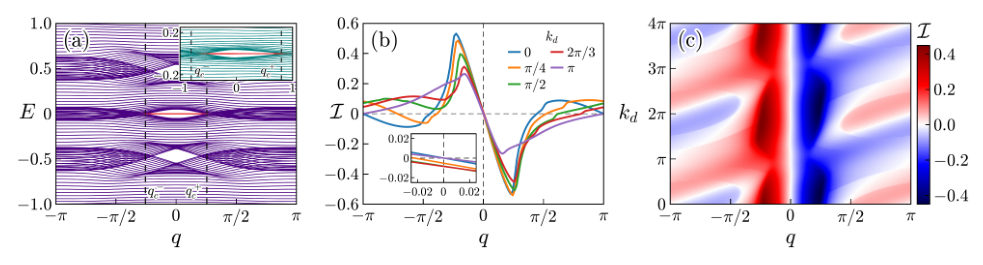
<figcaption class="paper-figure-caption"><b>Fig 2.</b> FIG. 2. (a) Floquet quasienergy spectrum versus Cooper-pair momentum q at kd = 0, showing a zero-energy branch confined to the window [q− c , q+ c ], which is symmetric about q = 0. (b) Supercurrent I(q) for several kd. The response is near-linear inside the gapped window and the amplitude falls monotonically with kd. Inset: magnification about the origin showing I(0) ≠0, i.e., a finite equilibrium pair momentum q0, for every kd ≠nπ. (c) Current in the kd–q plane, displaying 2π periodicity in kd and the antisymmetry I(q, kd) = −I(−q, −kd). Throughout, t = 0.5, ∆= 0.7, g = π/2, V = 1.5, and here J = 2, µ = 2.5.</figcaption>
</figure>
<figure class="paper-figure-card">
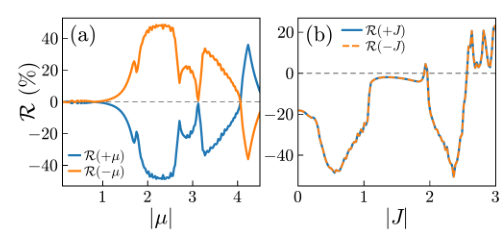
<figcaption class="paper-figure-caption"><b>Fig 3.</b> FIG. 3. Rectification versus (a) chemical potential at J = 0.5 and (b) exchange coupling at µ = 2.5, for kd = 2π/3. The two panels obey opposite parities: R(µ) = −R(−µ), so the diode reverses with band filling and vanishes at half filling, whereas R(J) = R(−J), so reversing every adatom moment leaves it unchanged. Note that R remains finite as J →0.</figcaption>
</figure>
<figure class="paper-figure-card">
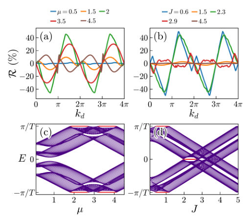
<figcaption class="paper-figure-caption"><b>Fig 4.</b> FIG. 4. (a),(b) Rectification versus drive wavevector for sev- eral µ at J = 0.5 and several J at µ = 2.5. The response is 2π-periodic with exact zeros at kd = nπ, and is extremal near kd = 2π/3 and 4π/3. Some parameter choices reach 40–50% while others stay below 10%. (c),(d) Floquet quasienergy spectra over the full zone versus µ at J = 0.5 and versus J at µ = 2.5; red marks localized branches. The large-R curves in (a) coincide with the π-mode windows of (c), and those in (b) with the π- and zero-mode windows of (d).</figcaption>
</figure>
<figure class="paper-figure-card">
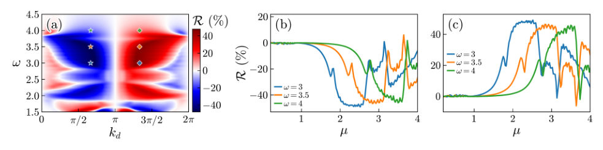
<figcaption class="paper-figure-caption"><b>Fig 5.</b> FIG. 5. ((a) Rectification in the kd–ω plane at µ = 2.5, J = 0.5. Below ω ≃2 the sign alternates as single-photon resonances sweep the band; above it the sign is fixed by kd alone, deepening near kd = 2π/3 and 4π/3, and fading beyond ω ≃4 towards the static limit. (b),(c) R versus µ at kd = 2π/3 and 4π/3 for ω = 3, 3.5 and 4. The onset in µ shifts systematically with frequency, tracking the drive-tunable topological boundary.</figcaption>
</figure>
</div>

<p><strong>Summary.</strong> This work demonstrates a field-free method to induce the superconducting diode effect in a Shiba chain by applying a traveling wave drive to the chemical potential. This drive generates a synthetic gauge flux, breaking time-reversal symmetry and enabling current rectification. The study shows that this effect is tunable, robust, and strongly enhanced in topologically non-trivial superconducting phases.</p>
<p><strong>Why it may be interesting.</strong> The use of a time-periodic drive to engineer broken symmetries (synthetic gauge fields) is highly relevant to AMO physics and open quantum systems, providing a clean, tunable platform to study non-equilibrium quantum phenomena like diode effects.</p>
<details>
<summary>Detailed structure</summary>
<p><strong>Main problem.</strong> The paper addresses the challenge of achieving the superconducting diode effect (SDE), which requires breaking both inversion and time-reversal symmetries, without relying on external magnetic fields.</p>
<p><strong>Main result.</strong> A spatio-temporally driven chemical potential, acting as a synthetic gauge field, successfully breaks the necessary symmetries, leading to a tunable and controllable superconducting diode effect.</p>
<p><strong>Method.</strong> The analysis employs Floquet theory and the Bogoliubov-de Gennes (BdG) formalism to study the time-periodic Hamiltonian and derive the supercurrent response.</p>
<p><strong>Model / system.</strong> The model is a helical Shiba chain (magnetic adatoms on an s-wave superconductor) subjected to a time-periodic drive $\mu_j(t) = \mu + V\cos(\omega t + kdj)$.</p>
<p><strong>Key observables.</strong> Superconducting diode effect (SDE) rectification factor ($R$), supercurrent $I(q)$, and the quasienergy spectrum.</p>
<p><strong>Important parameters / regimes.</strong> Drive wavevector ($k_d$), frequency ($\omega$), chemical potential ($\mu$), and the exchange coupling ($J$).</p>
<p><strong>Assumptions / limitations.</strong> The analysis often focuses on the low-temperature limit and assumes the applicability of Floquet theory for the driven system.</p>
<p><strong>Figures summary.</strong> Figures illustrate the driven system, showing the quasienergy spectrum and the supercurrent $I(q)$ dependence on the drive wavevector $k_d$, demonstrating the displacement of the zero-current contour.</p>
<p><strong>Paper structure.</strong> The paper establishes the need for symmetry breaking, introduces the traveling wave drive as the solution, analyzes the resulting supercurrent using Floquet theory, and quantifies the rectification factor, linking its magnitude to the system's topological phase.</p>
</details>
<details>
<summary>Abstract</summary>
<p>The superconducting diode effect requires the forward and reverse bias currents to differ, a scenario achieved via inversion and time-reversal symmetries broken together. The latter, and the more crucial one, is inevitably achieved by a magnetic field. Here, we show that a spatio-temporally driven chemical potential of the form, $μ_j(t)=μ+V\cos(ωt+\kd j)$, achieves both at once. Applied to a helical Shiba chain, the drive transmutes a traveling Peierls phase via generating an odd-in-momentum term, equivalent to an imaginary next-nearest-neighbour Haldane-like hopping in real space. Remarkably, the protocol is spin-blind, which renders the time-reversal breaking via a synthetic gauge flux rather than an effective Zeeman field. The rectification is odd in the drive wavevector, with exact zeros at $\kd=nπ$ and an analytical optimum at $\kd=2π/3$. It is however, even in the exchange coupling, $J$ and persists even at $J=0$. Furthermore, the rectification scales inversely with the pair-breaking gap, yielding approximately $50\%$ rectification in the topological phase and $10\%$ in the trivial phase. Symmetry breaking is thus drive-controlled, allowing it to be switched on, tuned, and reversed without an external magnetic field.</p>
</details>
<p><sub><a href="#top">↑ back to top</a></sub></p>

<p><a id="paper-2610.29562"></a></p>
<h3 id="quantum-enhanced-matterwave-interferometry-in-a-ring-waveguide"><a href="http://arxiv.org/abs/2610.29562v1">Quantum-Enhanced Matterwave Interferometry in a Ring Waveguide</a></h3>
<p><strong>Authors:</strong> Sriganapathy Raghav, Utpal Roy<br>
<strong>Type:</strong> theory · <strong>Category:</strong> quantum gases · <strong>PDF:</strong> <a href="https://arxiv.org/pdf/2610.29562v1">https://arxiv.org/pdf/2610.29562v1</a><br>
<strong>Analysis basis:</strong> full PDF text, analyzed in chunks
<strong>Topic relevance:</strong> <code>Keldysh / 2PI / non-Gaussian methods</code> <strong>3/5</strong> · <code>analog quantum simulation</code> <strong>3/5</strong> · <code>interference shaping light</code> <strong>3/5</strong> · <code>methods for driven-dissipative</code> <strong>3/5</strong> · <code>quantum measurements</code> <strong>1/5</strong></p>
<div class="figure-strip-hint">↔ Scroll figures horizontally</div>
<div class="paper-figures-scroll">
<figure class="paper-figure-card">
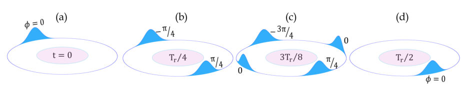
<figcaption class="paper-figure-caption"><b>Fig 1.</b> Figure 1: The probability density and the corresponding phase, for a non-interacting BEC, for fractional revival instances (a) t = 0, (b) t = Tr</figcaption>
</figure>
<figure class="paper-figure-card">
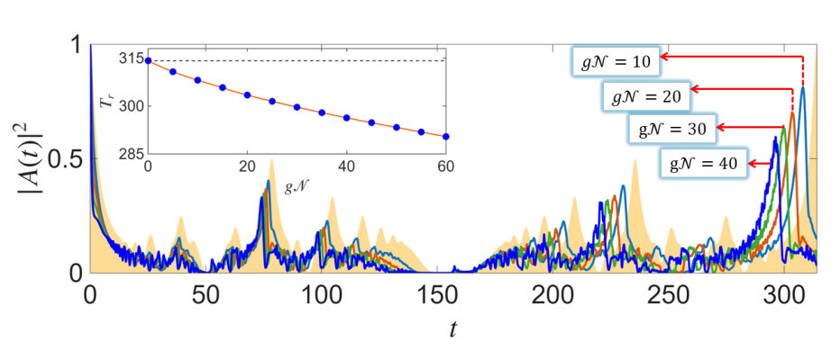
<figcaption class="paper-figure-caption"><b>Fig 2.</b> Figure 2: Survival function |A(t)|2 for different nonlinearities, gN = 0, 10, 20, 30, and 40. The non-interacting case, gN = 0, is shown as a filled plot in the background. The inset plot shows the dependence of the revival time Tr on nonlinearity, where the red-dashed line shows the revival time corresponding to a non-interacting BEC. Time is in the units of ω−1 x = 3.18 ms.</figcaption>
</figure>
<figure class="paper-figure-card">
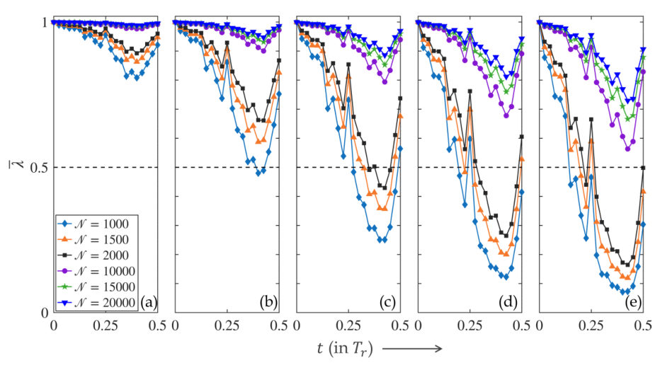
<figcaption class="paper-figure-caption"><b>Fig 3.</b> Figure 3: Condensate fraction as a function of time for different nonlinearities: (a) gN = 10, (b) gN = 20, (c) gN = 30, (d) gN = 40, and (e) gN = 50. For each nonlinearity, the condensate fraction is shown for atom numbers N = 1000, 1500, 2000, 10000, 15000, 20000. The black-dashed line indicates a condensate fraction of 50%. Here, Tr denotes the revival time corresponding to the respective nonlinearity gN and therefore has a different value in each panel. Tr is given in units of ω−1 x = 3.18 ms.</figcaption>
</figure>
<figure class="paper-figure-card">
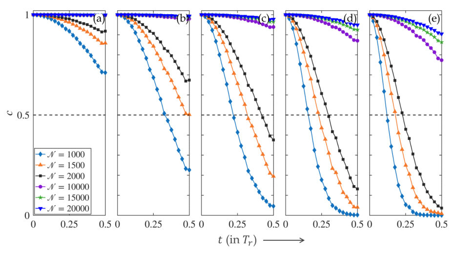
<figcaption class="paper-figure-caption"><b>Fig 4.</b> Figure 4: Phase coherence as a function of time for different nonlinearities: (a) gN = 10, (b) gN = 20, (c) gN = 30, (d) gN = 40, and (e) gN = 50. For each nonlinearity, c(t) is shown for atom numbers N = 1000, 1500, 2000, 10000, 15000, 20000. The black-dashed line indicates a phase coherence of 50%. Here, Tr denotes the revival time corresponding to the respective nonlinearity gN and therefore has a different value in each panel. Tr is given in units of ω−1 x = 3.18 ms.</figcaption>
</figure>
<figure class="paper-figure-card">
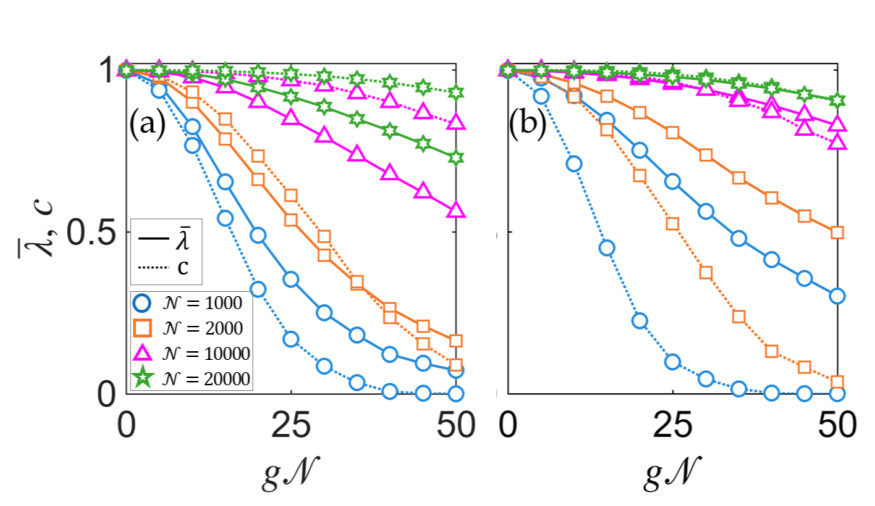
<figcaption class="paper-figure-caption"><b>Fig 5.</b> Figure 5: Comparison of the condensate fraction ¯λ and phase coherence c as a function of gN at (a) t = 0.425Tr and at (b) t = 0.5Tr for both small atom numbers N = 1000, 2000 and large atom numbers N = 10000, 20000. The condensate fraction ¯λ is represented by solid lines, while the phase coherence c is represented by dotted lines. Time is expressed in units of ω−1 x = 3.18 ms.</figcaption>
</figure>
</div>

<p><strong>Summary.</strong> The authors propose a novel quantum-enhanced matter-wave interferometer using a BEC in a ring waveguide. They leverage the intrinsic fractional-revival dynamics combined with controlled interaction quenching to generate significant spin squeezing. This method provides a robust, all-matter-wave route for high-precision quantum sensing.</p>
<p><strong>Why it may be interesting.</strong> This work directly addresses quantum metrology using ultracold atoms, showing how intrinsic quantum dynamics (FR) can replace external optical components while achieving squeezing below the Standard Quantum Limit.</p>
<details>
<summary>Detailed structure</summary>
<p><strong>Main problem.</strong> Developing a quantum-enhanced matter-wave interferometry protocol that utilizes the intrinsic dynamics of a Bose-Einstein condensate (BEC) in a ring waveguide.</p>
<p><strong>Main result.</strong> The proposed protocol achieves substantially stronger spin squeezing ($-14.57 \pm 0.27 	ext{ dB}$) by incorporating a controlled interaction quench after the initial fractional-revival beam-splitter operation.</p>
<p><strong>Method.</strong> The analysis employs the Truncated Wigner Approximation (TWA) to model the nonlinear evolution and quantum fluctuations within the BEC.</p>
<p><strong>Model / system.</strong> The system is a Bose-Einstein condensate confined to a ring waveguide. The dynamics are governed by the Gross-Pitaevskii equation, analyzed through the lens of fractional-revival (FR) dynamics.</p>
<p><strong>Key observables.</strong> Spin squeezing (measured in dB), condensate fraction ($ar{\lambda}(t)$), and phase coherence ($c(t)$).</p>
<p><strong>Important parameters / regimes.</strong> Interaction strength ($g$), revival time ($T_r$), and specific time points for phase control ($t=3T_r/8$).</p>
<p><strong>Assumptions / limitations.</strong> The analysis relies on the Truncated Wigner Approximation (TWA) and, in one derivation, assumes negligible spatial overlap between modes during nonlinear evolution.</p>
<p><strong>Figures summary.</strong> Figures illustrate the probability density and phase evolution during fractional revival, showing the shift of revival peaks with nonlinearity, and tracking the condensate fraction and phase coherence over time.</p>
<p><strong>Paper structure.</strong> The paper first establishes the physical basis using BEC dynamics in a ring, detailing the role of fractional revival. It then develops a protocol involving phase control and controlled interaction quenching to generate spin squeezing, culminating in the demonstration of quantum-enhanced interferometry.</p>
</details>
<details>
<summary>Abstract</summary>
<p>We propose a quantum-enhanced matter-wave interferometry protocol based on fractional-revival dynamics of a Bose-Einstein condensate in a ring, combined with a controlled interaction quench. Using the Truncated Wigner Approximation, we show that nonlinear evolution to the quarter revival generates modest spin squeezing of $-2.03\pm0.28\;$dB, which subsequently degrades under further nonlinear evolution. In contrast, starting from a non-interacting condensate, a controlled interaction quench applied after the initial quarter-revival beam-splitter operation generates substantially stronger spin squeezing of $-14.57\pm0.27\;$dB. We further show that phase control at $t=3T_r/8$ rotates the squeezed quadrature onto the phase-sensitive direction $\hat{J}_y$, producing a phase-squeezed state at $t=T_r/2$. The subsequent quarter-revival evolution converts this phase-squeezed state into a number-squeezed state, enabling population-difference readout. The resulting sequence provides a route to quantum-enhanced interferometry using the intrinsic fractional-revival dynamics of a ring together with controlled interaction and phase operations.</p>
</details>
<p><sub><a href="#top">↑ back to top</a></sub></p>

<p><a id="paper-2610.28993"></a></p>
<h3 id="digital-quantum-simulation-of-dynamics-in-interacting-fields"><a href="http://arxiv.org/abs/2610.28993v1">Digital Quantum Simulation of Dynamics in Interacting Fields</a></h3>
<p><strong>Authors:</strong> Zhiyao Li<br>
<strong>Type:</strong> both · <strong>Category:</strong> statistical mechanics · <strong>PDF:</strong> <a href="https://arxiv.org/pdf/2610.28993v1">https://arxiv.org/pdf/2610.28993v1</a><br>
<strong>Analysis basis:</strong> full PDF text, analyzed in chunks
<strong>Topic relevance:</strong> <code>Keldysh / 2PI / non-Gaussian methods</code> <strong>3/5</strong> · <code>methods for driven-dissipative</code> <strong>3/5</strong> · <code>non-equilibrium universality</code> <strong>3/5</strong> · <code>analog quantum simulation</code> <strong>2/5</strong> · <code>quantum measurements</code> <strong>1/5</strong></p>
<div class="figure-strip-hint">↔ Scroll figures horizontally</div>
<div class="paper-figures-scroll">
<figure class="paper-figure-card">
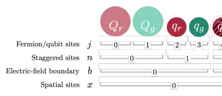
<figcaption class="paper-figure-caption"><b>Fig 1.</b> Figure 2.1: The lattice layout for heavy-quark, light-quark and light anti-quark fields on a</figcaption>
</figure>
<figure class="paper-figure-card">
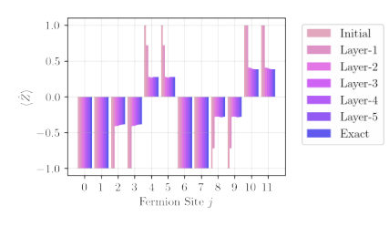
<figcaption class="paper-figure-caption"><b>Fig 2.</b> Figure 2.3: The ⟨ˆZj⟩as a function of the fermion site j, starting from the SC vacuum,</figcaption>
</figure>
<figure class="paper-figure-card">
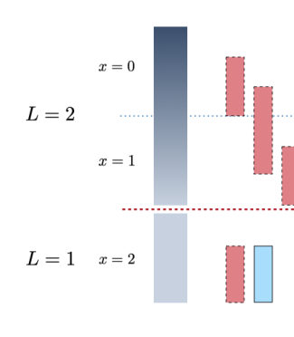
<figcaption class="paper-figure-caption"><b>Fig 3.</b> Figure 2.4: A block diagram for the DDec of the variational wavefunction in the nQ = 1</figcaption>
</figure>
<figure class="paper-figure-card">
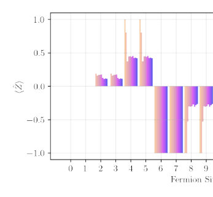
<figcaption class="paper-figure-caption"><b>Fig 4.</b> Figure 2.5: The ⟨ˆZj⟩as a function of fermion site j, from |SC; 3, 1, x = 0⟩, through the 8</figcaption>
</figure>
<figure class="paper-figure-card">
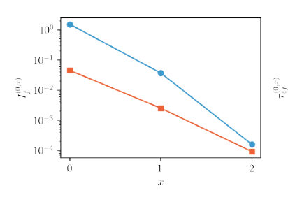
<figcaption class="paper-figure-caption"><b>Fig 5.</b> Figure 2.6: The mutual information (left panel, defined in Eq. (2.31)) and 4-tangle (right</figcaption>
</figure>
</div>

<p><strong>Summary.</strong> This paper develops quantum simulation techniques to study the complex, non-equilibrium dynamics of strongly interacting quantum matter, such as the quark-gluon plasma. It establishes a scalable framework for simulating energy loss in SU(2) lattice gauge theory using current quantum hardware. Key innovations include the use of physics-informed circuits and the SeqHT truncation method to mitigate hardware noise and resource limitations.</p>
<p><strong>Why it may be interesting.</strong> The focus on non-equilibrium dynamics, energy loss, and strongly coupled systems directly relates to open quantum systems and non-equilibrium statistical mechanics, providing concrete quantum simulation pathways for these regimes.</p>
<details>
<summary>Detailed structure</summary>
<p><strong>Main problem.</strong> The paper addresses the classically intractable problem of simulating the real-time dynamics of non-equilibrium, strongly-interacting quantum systems, such as the quark-gluon plasma.</p>
<p><strong>Main result.</strong> A scalable quantum framework is established for simulating energy loss and hadronization in 1+1-dimensional SU(2) lattice gauge theory, with techniques like SeqHT reducing circuit depth by ~30%.</p>
<p><strong>Method.</strong> The authors translate classical lattice QCD methods into physics-informed quantum circuits, running time evolution on NISQ hardware and employing advanced truncation methods.</p>
<p><strong>Model / system.</strong> The primary model is SU(2) lattice gauge theory, applied to simulate heavy quark energy loss in a background of light quarks. The work also involves the $\lambda\phi^4$ scalar field theory and the fully gauge-fixed SU(2) Hamiltonian.</p>
<p><strong>Key observables.</strong> Charge distribution, energy loss, mutual information, 4-tangle, and the expectation values of Hamiltonian components over time.</p>
<p><strong>Important parameters / regimes.</strong> The simulation operates in the non-perturbative regime of QCD, using specific lattice sizes (e.g., L=3, L=15) and requiring high precision ($10^{-3}$) for digitized gauge fields.</p>
<p><strong>Assumptions / limitations.</strong> The work is limited by current NISQ hardware constraints (qubit count and circuit depth), necessitating the use of physics-aware truncation methods like SeqHT.</p>
<p><strong>Figures summary.</strong> Figures illustrate the lattice setup for heavy/light quarks, the time evolution of observables like $\langle\hat{Z}_j
angle$, and the application of truncation techniques to reduce circuit depth.</p>
<p><strong>Paper structure.</strong> The paper establishes a scalable framework by first translating classical lattice QCD into quantum circuits, then demonstrating time evolution simulations on hardware, and finally developing advanced truncation techniques (SeqHT) to manage resource overhead.</p>
</details>
<details>
<summary>Abstract</summary>
<p>Matter under extreme conditions behaves as a non-equilibrium, strongly-interacting quantum system. Such systems are in the non-perturbative regime of quantum chromodynamics (QCD), where their time evolution is classically intractable. Quantum computing offers a promising alternative, but present-day devices are limited in qubit count and circuit depth, so efficient formulations and algorithms are key to scaling toward experimentally relevant QCD simulations. A scalable framework is established for simulating energy loss and hadronization in 1+1-dimensional SU(2) lattice gauge theory, in which a heavy quark traverses a lattice of light quarks. Classical lattice QCD methods are translated into physics-informed circuits to prepare the interacting ground state. The evolution is run on IBM's quantum processor ibm_pittsburgh, where the charge distribution and energy loss are measured. A further study develops the quantum simulation of the fully gauge-fixed SU(2) Hamiltonian in a mixed basis, a formulation that is expected to remain efficient at all gauge couplings. Digitizing the continuous gauge fields with as few as three qubits per plaquette reproduces low-energy observables with $10^{-3}$ precision. Scaling to larger systems is limited by resource overhead, which motivates truncations that preserve the relevant observables. Sequency Hierarchy Truncation (SeqHT) exploits the hierarchy in basis-operator contributions. Demonstrated on the adiabatic preparation of the $λφ^4$ ground state on ibm_sherbrooke, SeqHT reduces circuit depth by ~30%, suppressing hardware noise in the extracted observables. All simulations in this dissertation are validated on quantum hardware against classical benchmarks. These studies advance quantum simulations of real-time QCD dynamics.</p>
</details>
<p><sub><a href="#top">↑ back to top</a></sub></p>

<p><a id="paper-2610.29279"></a></p>
<h3 id="low-field-dephasing-time-of-an-optically-polarized-nvmath201math-spin-bath-beyond-the-p1-limit-in-diamond-a-cluster-correlation-expansion-and-exact-spin-bath-study"><a href="http://arxiv.org/abs/2610.29279v1">Low-field dephasing time of an optically polarized NV$^-$ spin bath beyond the P1 limit in diamond: a cluster-correlation-expansion and exact spin-bath study</a></h3>
<p><strong>Authors:</strong> Chikara Shinei<br>
<strong>Type:</strong> theory · <strong>Category:</strong> other · <strong>PDF:</strong> <a href="https://arxiv.org/pdf/2610.29279v1">https://arxiv.org/pdf/2610.29279v1</a><br>
<strong>Analysis basis:</strong> full PDF text, analyzed in chunks
<strong>Topic relevance:</strong> <code>QC/QI experiment</code> <strong>3/5</strong> · <code>Keldysh / 2PI / non-Gaussian methods</code> <strong>2/5</strong> · <code>methods for driven-dissipative</code> <strong>2/5</strong> · <code>analog quantum simulation</code> <strong>1/5</strong> · <code>correlated / nonlocal dissipation</code> <strong>1/5</strong> · <code>quantum measurements</code> <strong>1/5</strong></p>
<div class="figure-strip-hint">↔ Scroll figures horizontally</div>
<div class="paper-figures-scroll">
<figure class="paper-figure-card">
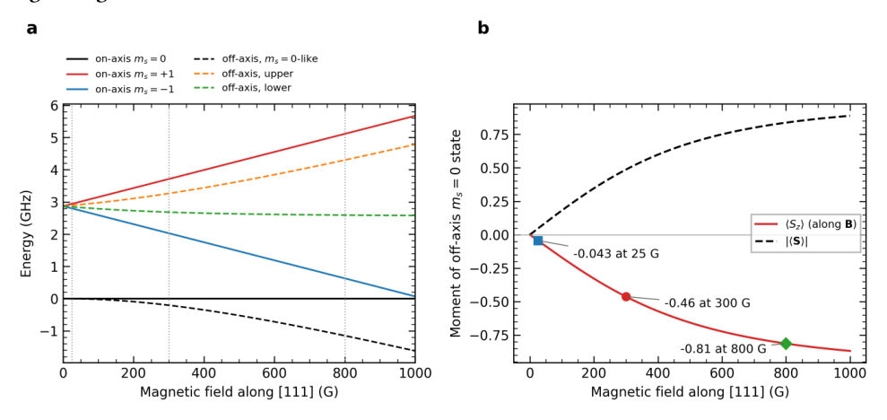
<figcaption class="paper-figure-caption"><b>Fig 1.</b> Fig. 1 | NV⁻ levels in a field along [111] and the induced moment of off-axis centres. a, Single-centre energy levels with mI = 0, referenced to mₛ = 0 at zero field (mₛ = ±1 at D = 2.87 GHz). Solid: on-axis orientation (mₛ = 0, +1, −1). Dashed: an off-axis orientation at 109.5°, its mₛ = 0-like level (black) and the upper and lower of the two remaining levels. Dotted vertical lines mark 25, 300 and 800 G. b, Moment of the off-axis mₛ = 0-like eigenstate: component along the field ⟨Sz⟩ (red) and magnitude |⟨S⟩| (dashed). It is −0.043, −0.46 and −0.81 at 25, 300 and 800 G, so a fully polarized bath is magnetically silent only at low field.</figcaption>
</figure>
<figure class="paper-figure-card">
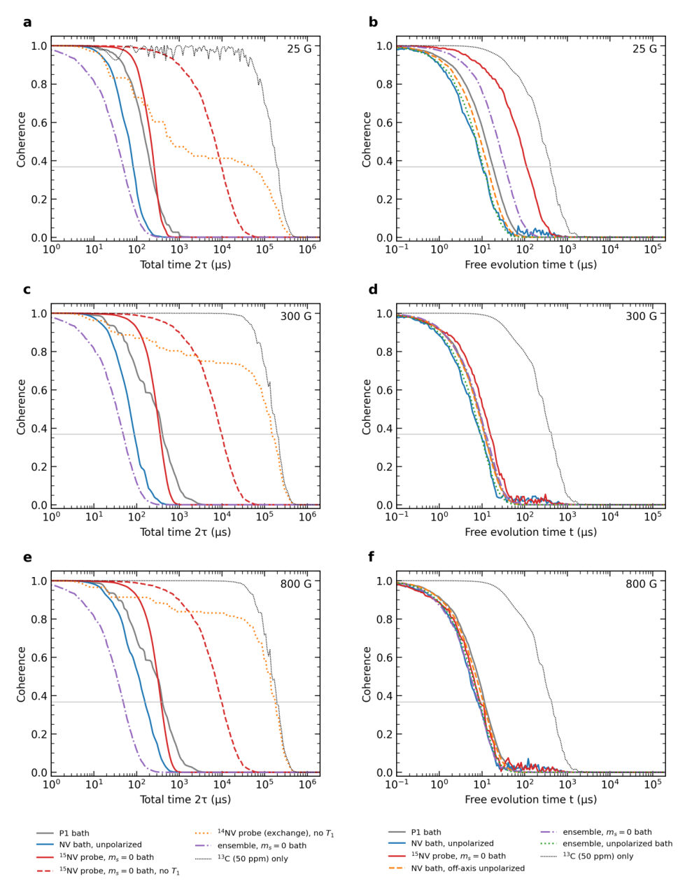
<figcaption class="paper-figure-caption"><b>Fig 2.</b> Fig. 2 | Coherence decays at 10¹⁷ cm⁻³. a,c,e, Hahn echo at 25 G (a), 300 G (c) and 800 G (e). Solid lines include room- temperature T₁ = 6 ms; dashed and dotted lines omit it. The ¹⁴NV⁻ probe (dotted orange) shows the exchange plateau in a fully polarized bath, which rises with field. A ¹⁵NV⁻ probe (red) is off resonance with the bath and, without T₁, decays only at about 10 ms. b,d,f, Free induction decay at the same fields. The black dotted line is the ¹³C-only (50 ppm) reference; at 25 G it shows ESEEM. Horizontal grey lines mark 1/e. Legends below each column apply to all rows; at 25 G the P1 echo is computed with the nitrogen nucleus explicit (Methods).</figcaption>
</figure>
<figure class="paper-figure-card">
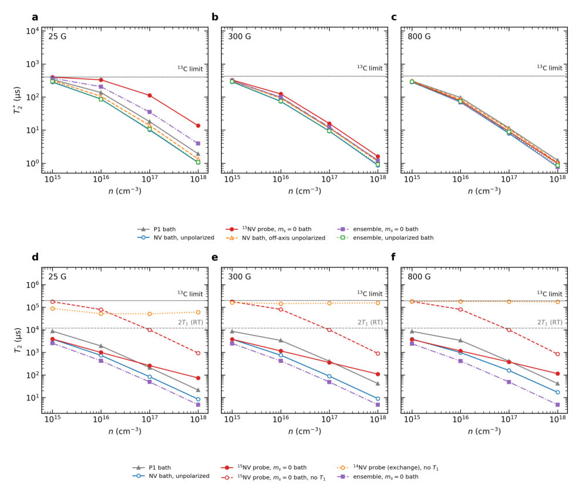
<figcaption class="paper-figure-caption"><b>Fig 3.</b> Fig. 3 | Concentration dependence of T₂* and T₂. a–c, T₂* at 25, 300 and 800 G. d–f, T₂ at the same fields. Filled symbols and solid lines include T₁ = 6 ms; open symbols omit it. The dotted line is the ¹³C limit and the dashed line 2T₁. A polarized bath means p = 1 for all orientations; “off-axis unpolarized” has p = 1 on axis and 1/3 off axis. At 25 G the P1 echo is computed with the nitrogen nucleus explicit (Methods).</figcaption>
</figure>
<figure class="paper-figure-card">
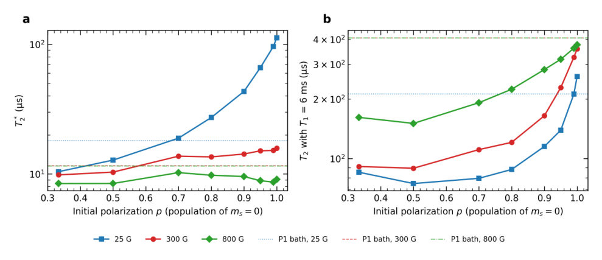
<figcaption class="paper-figure-caption"><b>Fig 4.</b> Fig. 4 | Dependence on the initial bath polarization at 10¹⁷ cm⁻³. a, T₂* of a ¹⁵NV⁻ probe against the population p of mₛ = 0 at 25 G (squares), 300 G (circles) and 800 G (diamonds). Horizontal lines are the P1 bath at each field (the 300 G and 800 G lines coincide). b, T₂ including T₁ = 6 ms. The polarization decays during the sequence, and p is its initial value. T₂ rises steeply only above p ≈ 0.9 and, at a given p, is longer at higher field, where the induced moments of the off-axis centres detune the minority flip-flops. The slightly higher value at p = 1/3 than at p = 0.5 (≤ 13 %) is within the spread of the configuration average and is not interpreted.</figcaption>
</figure>
<figure class="paper-figure-card">
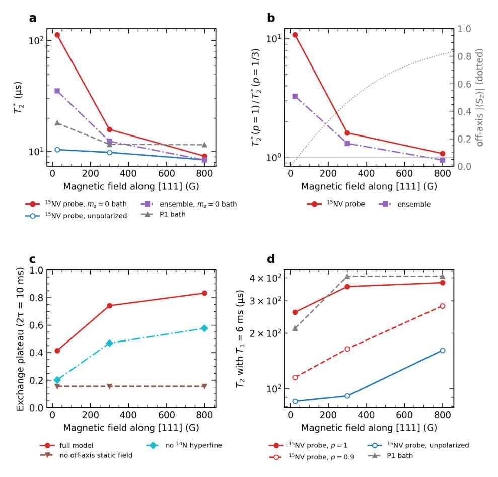
<figcaption class="paper-figure-caption"><b>Fig 5.</b> Fig. 5 | Field dependence at 10¹⁷ cm⁻³. a, T₂* of a ¹⁵NV⁻ probe in a fully polarized and an unpolarized NV⁻ bath, of an ensemble measurement in a polarized bath, and of the P1 bath. b, Gain in T₂* from full polarization for the ¹⁵NV⁻ probe and for an ensemble measurement, with the magnitude of the off-axis mₛ = 0 moment |⟨Sz⟩| (dotted, right axis). c, Echo plateau of the exchange factor of a ¹⁴NV⁻ probe in a fully polarized bath at 2τ = 10 ms, without T₁: full model, without the static field of the off-axis centres, and without the ¹⁴N hyperfine. d, T₂ including T₁ = 6 ms for a ¹⁵NV⁻ probe in a bath with p = 1, p = 0.9 and p = 1/3, and for the P1 bath. The same off-axis moment that...</figcaption>
</figure>
</div>

<p><strong>Summary.</strong> This theoretical study investigates how optically polarizing an NV- spin bath in diamond affects the dephasing time of a quantum sensor compared to a standard P1 bath. The authors find that polarization significantly extends coherence times at low magnetic fields, offering a pathway to surpass the intrinsic P1 limit. This advantage, however, is strongly dependent on the applied magnetic field.</p>
<p><strong>Why it may be interesting.</strong> This work provides quantitative predictions for enhancing quantum coherence in solid-state quantum memories by engineering the local spin environment through optical pumping, which is highly relevant to quantum sensing and quantum information processing.</p>
<details>
<summary>Detailed structure</summary>
<p><strong>Main problem.</strong> The study aims to determine if optically polarizing an NV- spin bath in diamond leads to slower dephasing of a sensor compared to a standard P1 spin bath of the same density.</p>
<p><strong>Main result.</strong> At low magnetic fields (25 G), the polarized NV- bath significantly extends the dephasing time ($T_2^*$) compared to the P1 bath (up to six times longer). However, this advantage diminishes and reverses at higher fields (800 G).</p>
<p><strong>Method.</strong> The research employs advanced theoretical techniques, including Cluster-Correlation-Expansion (CCE) calculations and an exact solver for probe-bath exchange, to model spin interactions.</p>
<p><strong>Model / system.</strong> The system involves electron spins from Nitrogen-Vacancy ($ ext{NV}^-$) centers and substitutional Nitrogen ($    ext{P1}$) centers embedded in diamond. The interactions are modeled via dipolar coupling, and the bath state is controlled by optical polarization.</p>
<p><strong>Key observables.</strong> Dephasing times ($T_2^*$ and $T_2$), the mean moment of bath centers along the field, and the exchange factor.</p>
<p><strong>Important parameters / regimes.</strong> Magnetic field strength (25 G, 300 G, 800 G), bath polarization ($p$), and bath concentration ($10^{17} 	ext{ cm}^{-3}$).</p>
<p><strong>Assumptions / limitations.</strong> The analysis relies on approximations like the Cluster-Correlation-Expansion (CCE) and Markov models for relaxation, though comparisons with exact solvers validate key results.</p>
<p><strong>Figures summary.</strong> Figures illustrate the field dependence of the mean moment and the resulting $T_2^*$ gain from polarization relative to the P1 bath, showing the advantage at low fields.</p>
<p><strong>Paper structure.</strong> The paper systematically compares the dephasing performance of the polarized $ ext{NV}^-$ bath versus the $    ext{P1}$ bath across varying magnetic fields, establishing the field dependence of the coherence time based on the bath's mean moment.</p>
</details>
<details>
<summary>Abstract</summary>
<p>Dense ensembles of nitrogen-vacancy (NV$^-$) centres in nitrogen-rich diamond dephase on the electron spins of the substitutional nitrogen (P1) centres. If the paramagnetic nitrogen is instead converted into NV$^-$ centres, the laser that initializes the sensor also pumps the bath into $m_s$ = 0, a state with no moment along its own axis. Using cluster-correlation-expansion (CCE) calculations, combined with an exact solver for probe-bath exchange and with no adjustable parameter, this paper asks whether such an optically polarized NV$^-$ bath dephases a sensor more slowly than a P1 bath of the same density. The answer is set by the field. In a field along [111], three quarters of the bath centres lie off the field axis, and the moment of their $m_s$ = 0 state along the field grows from 0.04 at 25 G to 0.46 at 300 G and 0.81 at 800 G. At 25 G the polarized bath is therefore nearly silent: at $10^{17}$ cm$^{-3}$ the dephasing time $T_2^*$ of a separately addressed $^{15}$NV$^-$ probe is 112 us, six times the 18.1 us of a P1 bath, and still 2.4 times at 90 % polarization; an ensemble measurement gains a factor of two. At 300 G the advantage over P1 shrinks to 1.4, and at 800 G the polarized bath dephases faster than P1. The field dependence of every bath, P1 included, follows the mean moment of its centres along the field. For the Hahn echo, exchange with on-axis bath centres and bath relaxation ($T_1$ = 6 ms) limit the gain to 1.2 times the P1 value at 25 G. Optical polarization of an NV$^-$ bath at low field therefore offers dephasing times beyond the P1 limit of nitrogen-rich diamond.</p>
</details>
<p><sub><a href="#top">↑ back to top</a></sub></p>

<p><a id="paper-2610.30124"></a></p>
<h3 id="phonon-assisted-free-electron-recoil-control-and-mechanical-sensing"><a href="http://arxiv.org/abs/2610.30124v1">Phonon-assisted free-electron recoil control and mechanical sensing</a></h3>
<p><strong>Authors:</strong> Sunjun Hwang, Lee Wei Wesley Wong, Liang Jie Wong, Leong Chuan Kwek<br>
<strong>Type:</strong> theory · <strong>Category:</strong> other · <strong>PDF:</strong> <a href="https://arxiv.org/pdf/2610.30124v1">https://arxiv.org/pdf/2610.30124v1</a><br>
<strong>Analysis basis:</strong> full PDF text, analyzed in chunks
<strong>Topic relevance:</strong> <code>quantum measurements</code> <strong>3/5</strong> · <code>analog quantum simulation</code> <strong>2/5</strong> · <code>Keldysh / 2PI / non-Gaussian methods</code> <strong>1/5</strong> · <code>driven-dissipative phase transition</code> <strong>1/5</strong> · <code>interference shaping light</code> <strong>1/5</strong> · <code>methods for driven-dissipative</code> <strong>1/5</strong> · <code>quantum optics experiment</code> <strong>1/5</strong></p>
<div class="figure-strip-hint">↔ Scroll figures horizontally</div>
<div class="paper-figures-scroll">
<figure class="paper-figure-card">
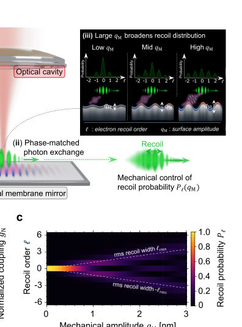
<figcaption class="paper-figure-caption"><b>Fig 1.</b> Fig. 1 Mechanical control of free-electron coupling and recoil. a, A free electron travels through vacuum above an optically illuminated membrane supporting a transverse mechanical mode. (i), An optical carrier at frequency ωL scatters through interaction with a membrane phonon, gen- erating an evanescent optical sideband at ωL + Ωm with tangential wave number Km. (ii), The mechanically generated near field carries the large tangential wave number Km, supplying the momen- tum required to satisfy the electron–light phase-matching condition. (iii), The amplitude of this generated near field scales with the membrane displacement qM, allowing the strength of the phase- matched electron...</figcaption>
</figure>
<figure class="paper-figure-card">
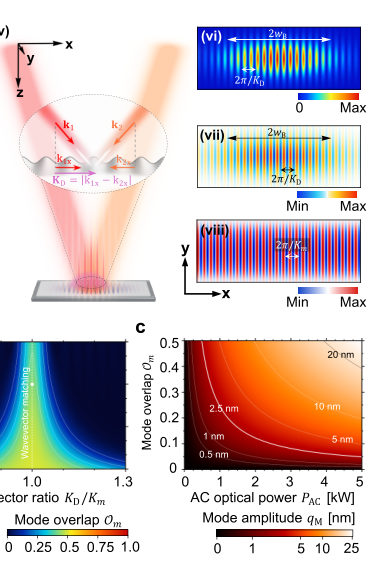
<figcaption class="paper-figure-caption"><b>Fig 2.</b> Fig. 2 Optical preparation of high-order transverse mechanical modes. a, Two strate- gies for exciting the standing (m, n) = (50, 1) membrane mode. (i–iv), Focused-beam preparation: an intensity-modulated beam at Ωm (i) is localized near a mechanical antinode (ii), producing an oscillating radiation-pressure profile (iii) that predominantly drives one displacement region of the target mode (iv) and thereby reduces spatial cancellation. (v–viii), Two-beam preparation: coherent non-collinear beams with |ω1 −ω2| = Ωm (v) generate a traveling beat-intensity pattern (vi) and corresponding oscillating radiation pressure (vii). Matching KD = |k1x −k2x| to Km aligns this pres- sure pattern with the...</figcaption>
</figure>
<figure class="paper-figure-card">
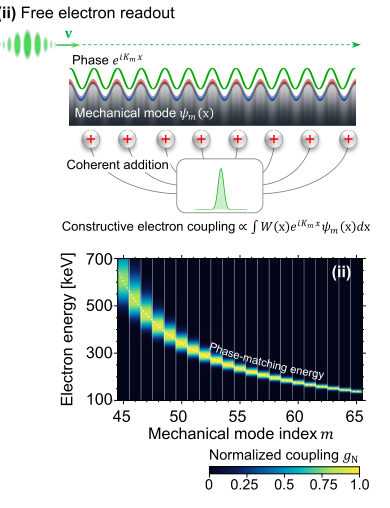
<figcaption class="paper-figure-caption"><b>Fig 3.</b> Fig. 3 Momentum-selective free-electron readout of high-order mechanical modes. a, Contrasting spatial response of optical and electron readout. (i), A Gaussian optical probe averages regions of opposite mechanical displacement, producing spatial cancellation and a suppressed opti- cal response. (ii), For a phase-matched electron, the interaction phase compensates the alternating mechanical pattern so that contributions along the trajectory add coherently. Here W(x) denotes the optical near-field envelope sampled by the electron; red and blue regions indicate opposite mechanical displacements. Schematics are not to scale. b, Calculated readout of mechanical modes m = 45–65. (i), Gaussian...</figcaption>
</figure>
<figure class="paper-figure-card">
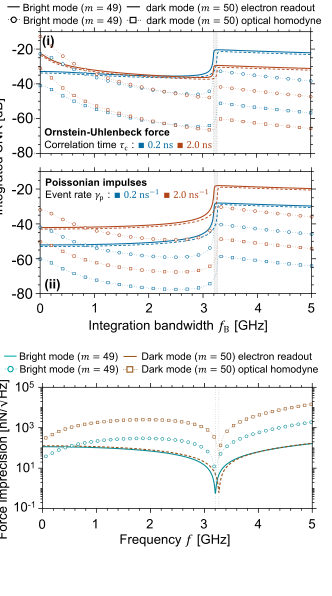
<figcaption class="paper-figure-caption"><b>Fig 4.</b> Fig. 4 Free-electron readout of localized mechanical perturbations. a, Proposed sensing geometry. (i), Successive electrons probe an optically illuminated membrane, with δte denoting the interval between arrivals. (ii), A localized external force perturbs the amplitude of a transverse mechanical mode and thereby modifies the mechanically generated optical near field. (iii), The resulting change in electron–field coupling modulates the electron momentum distribution, which is measured using energy-resolved electron detection. Momentum-dispersive electron optics required to resolve the electron recoil orders are omitted for clarity. Schematics are not to scale. b, Integrated SNR for an...</figcaption>
</figure>
</div>

<p><strong>Summary.</strong> This theoretical study demonstrates that mechanical vibrations in an optomechanical membrane can be used to actively control the recoil of free electrons passing nearby. By analyzing the resulting electron recoil spectrum, the authors show that this method provides a superior signal-to-noise ratio for detecting localized external forces compared to traditional optical sensing techniques. This establishes a new paradigm for mechanically tunable free-electron optics.</p>
<p><strong>Why it may be interesting.</strong> This work directly bridges mechanical actuation (phonons/vibrations) with quantum particle dynamics (free electrons) using cavity QED principles, providing a novel, mechanically reconfigurable platform for quantum sensing.</p>
<details>
<summary>Detailed structure</summary>
<p><strong>Main problem.</strong> The paper investigates how mechanical vibrations can be utilized to actively control the dynamics of free electrons and enable highly sensitive localized force sensing.</p>
<p><strong>Main result.</strong> Electron readout of localized stochastic forces can achieve a higher signal-to-noise ratio compared to standard Gaussian optical homodyne benchmarks under comparable detection rates.</p>
<p><strong>Method.</strong> The authors developed a theoretical framework analyzing the phase-matched interaction between free electrons and cavity light, mediated by the momentum supplied by the transverse motion of an optomechanical membrane.</p>
<p><strong>Model / system.</strong> The system involves a free electron passing over an illuminated, vibrating membrane. The membrane's motion generates high-momentum evanescent sidebands that enable phase-matched coupling with the electron beam.</p>
<p><strong>Key observables.</strong> Electron recoil spectrum ($P_\ell$), which is governed by Bessel functions ($J_\ell^2(g_m)$), and the resulting signal-to-noise ratio (SNR) for force detection.</p>
<p><strong>Important parameters / regimes.</strong> Mechanical displacement ($q_M$), mechanical mode ($m$), coupling magnitude ($g_m$), and the comparison between electron and optical readout rates.</p>
<p><strong>Assumptions / limitations.</strong> The model uses a tension-dominated fixed-boundary approximation, and the coupling strength approximation is given for a Gaussian interaction envelope.</p>
<p><strong>Figures summary.</strong> Figures illustrate the setup showing evanescent sideband generation and momentum supply; they also show the dependence of the electron coupling strength ($g_m$) on mechanical amplitude and the redistribution of electron recoil populations ($P_\ell$) as $q_M$ is varied.</p>
<p><strong>Paper structure.</strong> The paper progresses by establishing the theoretical basis for mechanical control of electron-light interaction, detailing the resulting electron recoil spectrum, and culminating in a quantitative comparison showing the superior force sensitivity achieved via electron detection versus optical homodyne detection.</p>
</details>
<details>
<summary>Abstract</summary>
<p>Mechanical vibrations are fundamental to a wide range of physical phenomena and technologies, yet their ability to actively shape free-electron dynamics remains largely unexplored. Here we theoretically show how an optomechanical membrane provides a phonon-assisted optical interface for controlling free-electron recoil and sensing localized forces. Transverse membrane motion scatters cavity light into high-momentum evanescent sidebands that enable phase-matched interaction with electrons traveling in vacuum. Beyond supplying momentum for phase matching, the vibration amplitude controls the electron-light interaction strength and redistributes electron populations among recoil orders. External forces that perturb the vibration are thereby encoded in the electron recoil spectrum. Under the modeled conditions, electron readout of localized stochastic forces can yield a higher signal-to-noise ratio than a Gaussian optical homodyne benchmark at equal detected probe rates. These results provide a theoretical basis for mechanically reconfigurable free-electron optics and mode-selective mechanical sensing.</p>
</details>
<p><sub><a href="#top">↑ back to top</a></sub></p>

<p><a id="paper-2610.28846"></a></p>
<h3 id="methods-for-deriving-nonlinear-kinetic-equations-from-the-dynamics-of-quantum-systems"><a href="http://arxiv.org/abs/2610.28846v1">Methods for Deriving Nonlinear Kinetic Equations from the Dynamics of Quantum Systems</a></h3>
<p><strong>Authors:</strong> V. I. Gerasimenko<br>
<strong>Type:</strong> theory · <strong>Category:</strong> statistical mechanics · <strong>PDF:</strong> <a href="https://arxiv.org/pdf/2610.28846v1">https://arxiv.org/pdf/2610.28846v1</a><br>
<strong>Analysis basis:</strong> full PDF text, analyzed in chunks
<strong>Topic relevance:</strong> <code>Keldysh / 2PI / non-Gaussian methods</code> <strong>3/5</strong> · <code>analog quantum simulation</code> <strong>3/5</strong> · <code>methods for driven-dissipative</code> <strong>3/5</strong></p>
<div class="figure-strip-hint">↔ Scroll figures horizontally</div>
<div class="paper-figures-scroll">
<figure class="paper-figure-card">
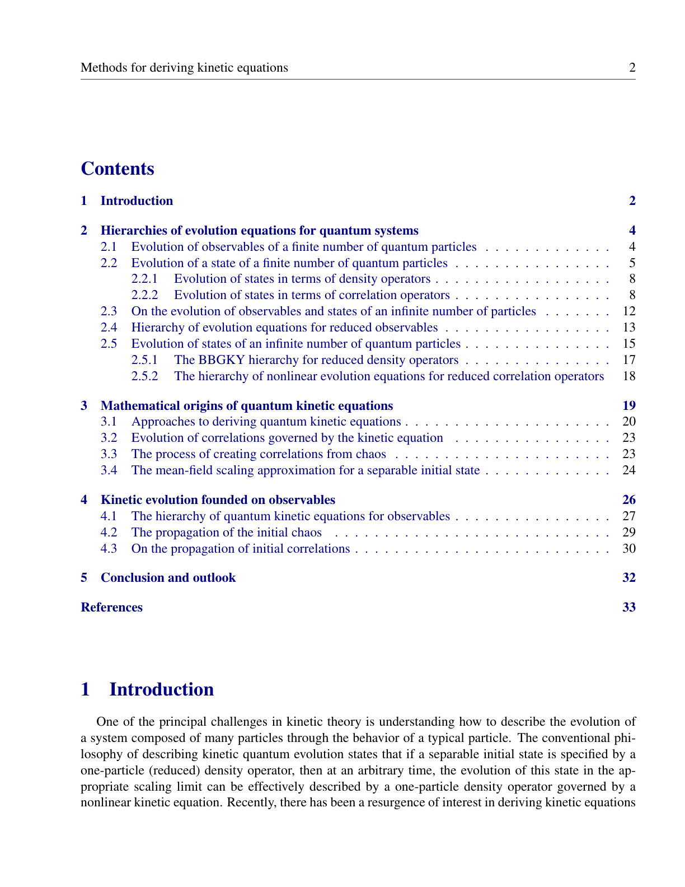
<figcaption class="paper-figure-caption"><b>Fig 1.</b> Low-resolution page preview, page 2</figcaption>
</figure>
<figure class="paper-figure-card">
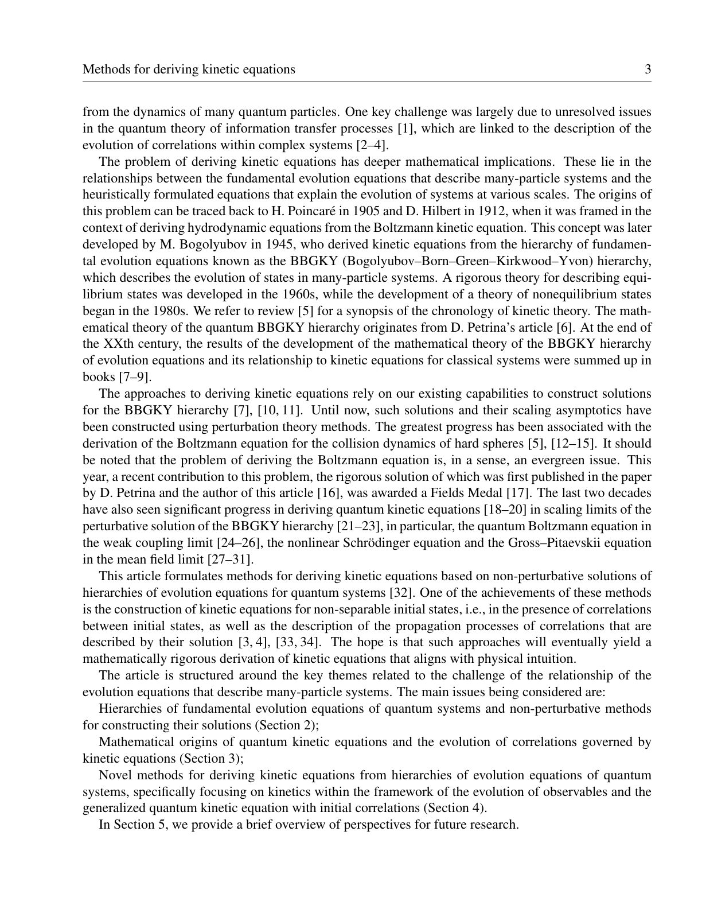
<figcaption class="paper-figure-caption"><b>Fig 2.</b> Low-resolution page preview, page 3</figcaption>
</figure>
<figure class="paper-figure-card">
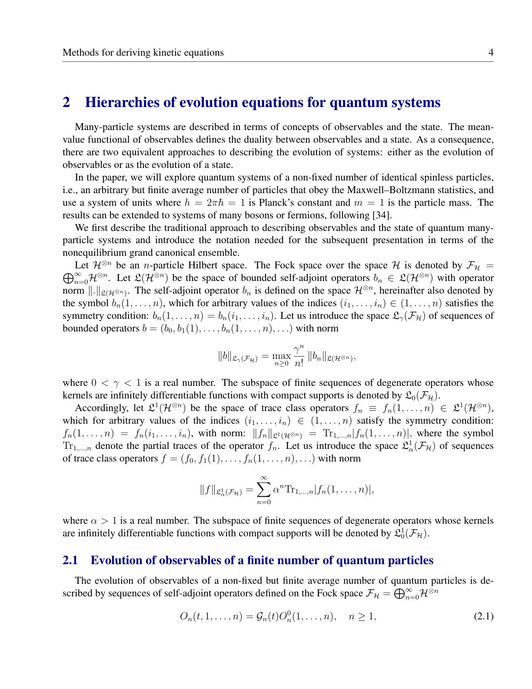
<figcaption class="paper-figure-caption"><b>Fig 3.</b> Low-resolution page preview, page 4</figcaption>
</figure>
<figure class="paper-figure-card">
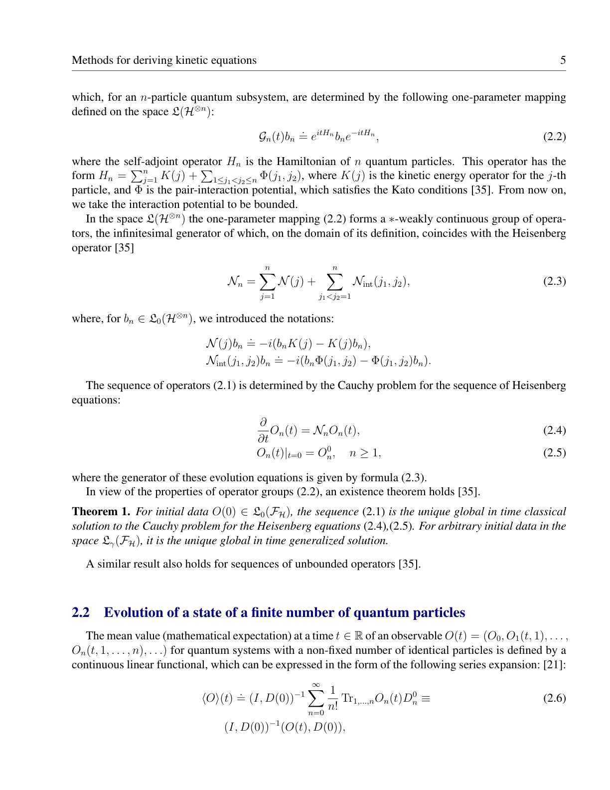
<figcaption class="paper-figure-caption"><b>Fig 4.</b> Low-resolution page preview, page 5</figcaption>
</figure>
<figure class="paper-figure-card">
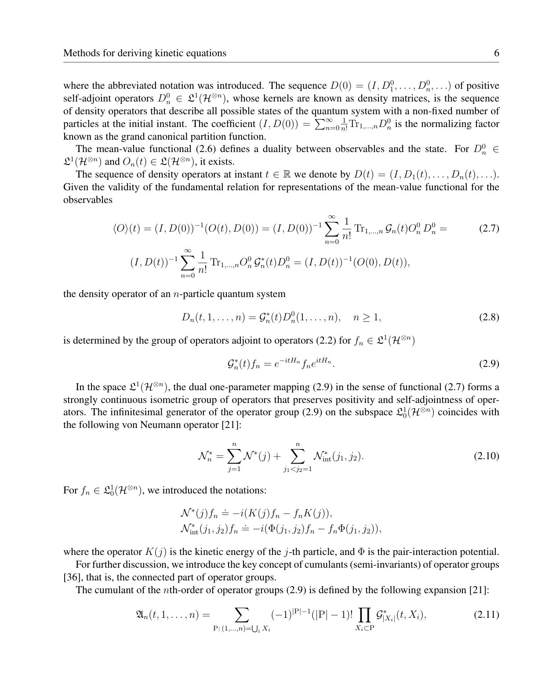
<figcaption class="paper-figure-caption"><b>Fig 5.</b> Low-resolution page preview, page 6</figcaption>
</figure>
</div>

<p><strong>Summary.</strong> This paper develops advanced mathematical methods to derive nonlinear kinetic equations for quantum many-body systems. It rigorously connects the evolution of quantum observables (Heisenberg picture) and the evolution of the state (von Neumann picture) using cluster expansions. The resulting kinetic equations, such as the quantum Vlasov equation, are non-Markovian and describe the system's dynamics in the mean-field limit.</p>
<p><strong>Why it may be interesting.</strong> This work provides a rigorous mathematical framework for bridging the gap between microscopic quantum Hamiltonians and macroscopic, nonlinear kinetic descriptions, which is crucial for understanding non-equilibrium quantum dynamics in many-body systems.</p>
<details>
<summary>Detailed structure</summary>
<p><strong>Main problem.</strong> The core problem is deriving nonlinear kinetic equations that govern the time evolution of quantum many-particle systems from their underlying microscopic quantum dynamics.</p>
<p><strong>Main result.</strong> The paper establishes formalisms, including Vlasov and dual Vlasov hierarchies, showing that the evolution of observables can be consistently derived from both the state evolution (von Neumann equation) and the observable evolution (Heisenberg equation) in the mean-field limit.</p>
<p><strong>Method.</strong> The methodology relies on advanced mathematical techniques such as cluster expansions, cumulant expansions, and analyzing the structure of operator groups (Heisenberg and von Neumann generators) to derive macroscopic kinetic equations.</p>
<p><strong>Model / system.</strong> The analysis focuses on quantum many-particle systems described by a Hamiltonian involving kinetic energy and pair-interaction potentials, applicable to systems like Bose-Einstein condensates.</p>
<p><strong>Key observables.</strong> The primary observables include the one-particle density operator, reduced density operators $ ext{f}_s(t, 1, \dots, s)$, and correlation operators ($ ext{g}_n$).</p>
<p><strong>Important parameters / regimes.</strong> Key regimes include the mean-field limit and the analysis of non-Markovian dynamics.</p>
<p><strong>Assumptions / limitations.</strong> Major assumptions include the boundedness of the interaction potential ($\Phi$) and the application of the mean-field approximation to derive the final kinetic equations.</p>
<p><strong>Paper structure.</strong> The paper progresses by first detailing the formal evolution of observables via the Heisenberg equation, then introducing the state evolution via the von Neumann equation, and finally deriving the limiting kinetic equations (like the quantum Vlasov equation) using cluster expansions in the mean-field limit.</p>
</details>
<details>
<summary>Abstract</summary>
<p>The article outlines key topics related to deriving kinetic equations and, in general, to the relationship between the evolution equations governing quantum many-particle systems. The main issues being considered are the mathematical origin of quantum kinetic equations, novel methods for deriving kinetic equations from hierarchies of evolution equations for quantum systems, specifically focusing on kinetics within the framework of the evolution of observables, and the generalization of the quantum kinetic equation specified by non-separable initial states.</p>
</details>
<p><sub><a href="#top">↑ back to top</a></sub></p>

<p><a id="paper-2610.29901"></a></p>
<h3 id="superconducting-parametric-amplifiers-based-on-arrays-of-unequal-josephson-junction-elements"><a href="http://arxiv.org/abs/2610.29901v1">Superconducting parametric amplifiers based on arrays of unequal Josephson junction elements</a></h3>
<p><strong>Authors:</strong> Boris Chesca, Tom Dixon, Narendra Acharya, Renuka D. Pothuraju, Jacob W. Dunstan, Connor D. Shelly, Oscar W. Kennedy<br>
<strong>Type:</strong> both · <strong>Category:</strong> other · <strong>PDF:</strong> <a href="https://arxiv.org/pdf/2610.29901v1">https://arxiv.org/pdf/2610.29901v1</a><br>
<strong>Analysis basis:</strong> full PDF text, analyzed in chunks
<strong>Topic relevance:</strong> <code>driven-dissipative phase transition</code> <strong>3/5</strong> · <code>Keldysh / 2PI / non-Gaussian methods</code> <strong>2/5</strong> · <code>methods for driven-dissipative</code> <strong>2/5</strong> · <code>QC/QI experiment</code> <strong>1/5</strong> · <code>quantum optics experiment</code> <strong>1/5</strong></p>
<div class="figure-strip-hint">↔ Scroll figures horizontally</div>
<div class="paper-figures-scroll">
<figure class="paper-figure-card">
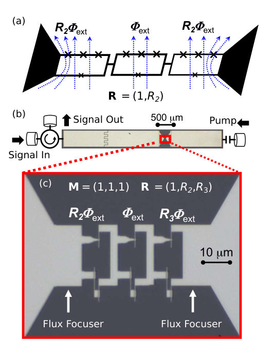
<figcaption class="paper-figure-caption"><b>Fig 1.</b> FIG. 1. (a) Schematics of an M = (1, 2) array of unequal SNAILs. The left and right-hand side SNAILs have additional built-in flux focusers leading to the general case where R = (1, R2) where in this geometry the middle SNAIL has R1 = 1 and then edge SNAILs R2 &gt; 1. (b) Optical micrograph and schematic of the reflection measurement setup. (c) Optical micrograph of an M = (1, 1, 1) unequal SNAIL array that is flux-biased differently across the array with flux focusing factors R = (1, R2, R3).</figcaption>
</figure>
<figure class="paper-figure-card">
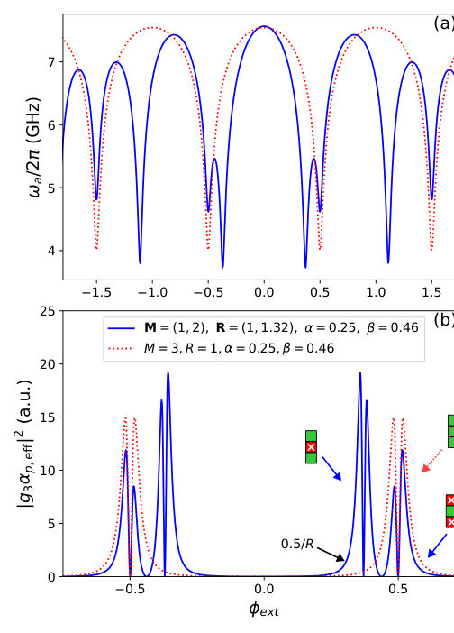
<figcaption class="paper-figure-caption"><b>Fig 2.</b> FIG. 2. Arrays of nominally identical SNAILs versus ar- rays of unequal SNAILs. (a) Calculated ωa(ϕext)/2π and (b) |g3αp,eff(ϕext)|2 (in arbitrary units a.u.) based on Eqs. 4 and 8, respectively. In both panels solid lines are for a JPA based on an array of unequal SNAILs with M = (1, 2) and R = (1, 1.32) while dotted lines are for a JPA based on an array of M = 3 identical SNAILs (R = 1). In (b) the three-wave mixing ac- tive (inactive) SNAILs are schematically represented as green (red with superimposed X) squares. In the calculations the following values for the remaining relevant parameters were used: α = 0.25, and β = 0.46.</figcaption>
</figure>
<figure class="paper-figure-card">
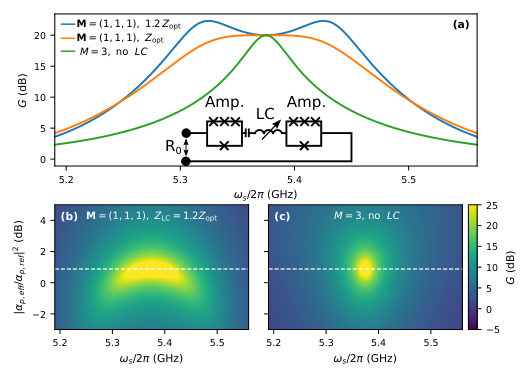
<figcaption class="paper-figure-caption"><b>Fig 3.</b> FIG. 3. Calculated G(ω) using Eqs. 10a and 10b for two cases. The first case is for an array of unequal SNAILs with M = (1, 1, 1), R = (1, 1.32, 1.40) and modelled using an effective circuit shown in the inset of (a): the first and third SNAILs in the array operate as tuned parametric amplifiers, while the middle SNAIL operates as an LC resonator with a tunable inductance LM, or equivalently, tunable impedance ZLC; in (a) the blue curve is for ZLC = 1.2Zopt and the orange curve is for ZLC = Zopt, while the heatmap in (b) is for ZLC = 1.2Zopt. The second case is for an array of M = 3 nominally identical SNAILs (i.e., R = 1) and no LC resonator: see the green curve in (a) and heatmap in (c)....</figcaption>
</figure>
<figure class="paper-figure-card">
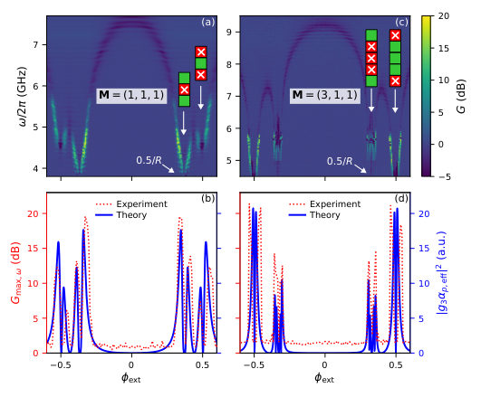
<figcaption class="paper-figure-caption"><b>Fig 4.</b> FIG. 5. (a, c) measured 2D heatmaps for gain G(ϕext, ω), with (b, d) extracted Gmax,ω(ϕext) and calculated |g3αp,eff|2(ϕext) based on Eq. 8 in arbitrary units (a.u.) for an array of unequal SNAILs with (a) M = (1, 1, 1) and (c) M = (3, 1, 1). The three-wave mixing active (inactive) SNAILs are schematically represented as green (red with superimposed X) squares, while the vertical arrows indicate the corresponding flux bias regions of applicability. In the calculations the following values for the relevant parameters were used: (b) R = (1, 1.32, 1.40), α=0.25, and β=0.46 and (d) R = (1, 1.43, 1.60), α=0.28 and β=3. These are precisely the same values used in the theory plots of Fig. 4.</figcaption>
</figure>
<figure class="paper-figure-card">
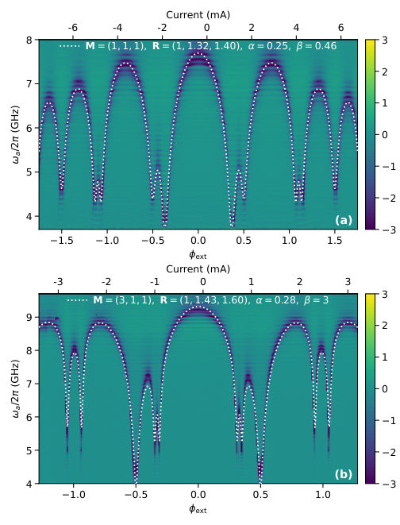
<figcaption class="paper-figure-caption"><b>Fig 5.</b> FIG. 4. Low-power, single-tone measurements of resonant frequency ωa versus normalized externally applied dc mag- netic flux ϕext of two JPAs based on arrays of unequal SNAILs. In blue are the absorption single-tone transmis- sion S21 heatmap measurements versus the corresponding B field coil current; white dotted lines are calculations of ωa(ϕext) based on Eq. 4 with the following parameters: (a) a device with M = (1, 1, 1),R = (1, 1.32, 1.40), α = 0.25, β = 0.46; (b) a device with M = (3, 1, 1), R = (1, 1.43, 1.60), α=0.28, β=3. In the measurements for each fixed coil current, the signal frequency is swept over several GHz.</figcaption>
</figure>
</div>

<p><strong>Summary.</strong> This paper proposes a novel method for enhancing the bandwidth of superconducting parametric amplifiers by utilizing arrays composed of Josephson junctions with unequal physical properties. By exploiting the resulting quasi-non-periodic flux dependence, the impedance matching function is integrated into the device itself, achieving high gain over significantly broadened bandwidths without external matching circuits.</p>
<p><strong>Why it may be interesting.</strong> This work is highly relevant to quantum optics and open quantum systems because it deals with enhancing the performance (bandwidth) of a quantum nonlinear device (the JPA) by engineering the underlying physical coupling mechanism (the junction array inhomogeneity) rather than relying on external classical components.</p>
<details>
<summary>Detailed structure</summary>
<p><strong>Main problem.</strong> The paper addresses the challenge of achieving impedance matching in superconducting parametric amplifiers (JPAs) to increase their instantaneous bandwidth, moving beyond traditional static LC resonators.</p>
<p><strong>Main result.</strong> Using arrays of unequal Josephson junction elements allows the impedance matching function to be integrated directly into the amplifier structure, yielding stable, broad bandwidths (e.g., 200 MHz bandwidth at 17 dB gain) without external matching circuits.</p>
<p><strong>Method.</strong> The authors developed an analytical theory by modeling the system using a multi-dimensional potential energy function derived from arrays of unequal Josephson junctions, which was then analyzed semi-classically.</p>
<p><strong>Model / system.</strong> The system consists of parametric amplifiers based on arrays of unequal Josephson junction elements (like SNAILs). The physics is governed by a complex potential energy function $U_{	ext{array}}$ that exhibits quasi-non-periodic flux dependence due to the unequal junction elements.</p>
<p><strong>Key observables.</strong> Instantaneous bandwidth, amplifier gain ($>17$ dB), quasi-non-periodic flux dependence of inductance and gain, and effective three-wave mixing interaction strength ($\left|g_{3\alpha p,eff}
ight|^2$).</p>
<p><strong>Important parameters / regimes.</strong> External magnetic flux ($\Phi_{	ext{ext}}$), Josephson junction parameters ($E_J, E_C$), and the flux-focusing ratios ($R_k$) characterizing the inequality of the junctions.</p>
<p><strong>Assumptions / limitations.</strong> Approximations include neglecting geometric inductance ($eta_S \ll 1$) and assuming specific relationships between junction energies ($E_{J,k} \gg E_{C,J}$).</p>
<p><strong>Figures summary.</strong> Figures illustrate schematics of the unequal junction arrays, heatmaps of the multi-dimensional potential confirming unsynchronized operation, and plots showing the flux dependence of the effective gain terms compared to identical junction arrays.</p>
<p><strong>Paper structure.</strong> The paper builds from the fundamental Hamiltonian description of the array potential, develops the analytical theory for the non-linear inductance and gain coefficients, and culminates in demonstrating the superior bandwidth performance achieved by exploiting the quasi-non-periodic nature of unequal junctions.</p>
</details>
<details>
<summary>Abstract</summary>
<p>Impedance matching is a crucial feature of an amplifier used to increase its instantaneous bandwidth and is typically achieved using static LC resonators. Here we show an approach to impedance matching in parametric amplifiers using arrays of unequal Josephson-junction-based elements (rf/dc SQUIDs, SNAILs, etc). The elements act either as small-footprint flux-tunable inductors forming an impedance-matching circuit, or 'active' amplifier elements which result in amplifier gain. We develop an analytical theory describing these systems, predicting a quasi-non-periodic amplifier frequency and gain modulation with applied flux and the broadening of gain bandwidths. We demonstrate this in devices using arrays of flux-focused SNAILs where flux biasing varies across the array. We find instantaneous bandwidths of 200 MHz with $&gt;$17 dB of gain centred at $\sim$5.4 GHz in a device without a static impedance matcher. This broadening of amplifier bandwidth is stable with $&gt;$100 MHz bandwidth at 17 dB gain across $&gt;$1.2 GHz tunable bandwidth. Our analytical model captures flux dependence and qualitatively reproduces gain-bandwidths giving confidence in our understanding of these systems and allowing operational figures of merit to be optimised in future devices.</p>
</details>
<p><sub><a href="#top">↑ back to top</a></sub></p>

<p><a id="paper-2610.29540"></a></p>
<h3 id="a-compact-ultracold-strontium-experiment"><a href="http://arxiv.org/abs/2610.29540v1">A compact ultracold strontium experiment</a></h3>
<p><strong>Authors:</strong> Mathieu Bertrand, Torben Pöpplau, Lucas Béguin, Romain Long, Jakob Reichel<br>
<strong>Type:</strong> experiment · <strong>Category:</strong> other · <strong>PDF:</strong> <a href="https://arxiv.org/pdf/2610.29540v1">https://arxiv.org/pdf/2610.29540v1</a><br>
<strong>Analysis basis:</strong> full PDF text, analyzed in chunks
<strong>Topic relevance:</strong> <code>QC/QI experiment</code> <strong>3/5</strong> · <code>analog quantum simulation</code> <strong>3/5</strong> · <code>quantum measurements</code> <strong>1/5</strong> · <code>quantum optics experiment</code> <strong>1/5</strong></p>
<div class="figure-strip-hint">↔ Scroll figures horizontally</div>
<div class="paper-figures-scroll">
<figure class="paper-figure-card">
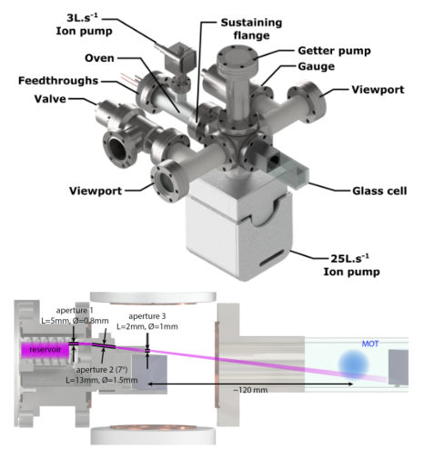
<figcaption class="paper-figure-caption"><b>Fig 1.</b> FIG. 1. (a) Global view of the vacuum system. The total length from the feedthrough to the glass cell is 40 cm. (b) Sectinal view showing the atomic beam path, with the six- way cross removed for clarity.</figcaption>
</figure>
<figure class="paper-figure-card">
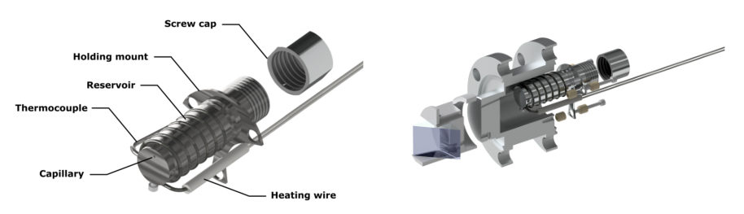
<figcaption class="paper-figure-caption"><b>Fig 2.</b> FIG. 2. (a) CAD view of the oven. (b) In-situ view of the oven assembly in the sustaining flange. (Thermocouple not shown.) Low thermal conduction between the oven and the the flange is ensured by the reduced thickness of the holding plate and the nonmetallic screw sleeves and spacers.</figcaption>
</figure>
<figure class="paper-figure-card">
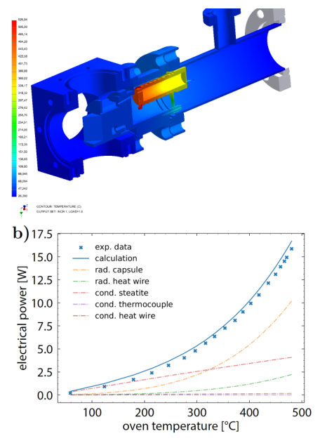
<figcaption class="paper-figure-caption"><b>Fig 3.</b> FIG. 3. (a) Finite-element simulation of the temperature dis- tribution of the oven assembly with a heating power of 15 W. (b) Electrical power consumption vs measured oven tempera- ture (circles). The solid line is the result of the simple model described in the text; dot-dashed lines indicate its individ- ual contributions as indicated in the legend. This calculation confirms that thermal radiation is the leading contribution in the relevant temperature range.</figcaption>
</figure>
<figure class="paper-figure-card">
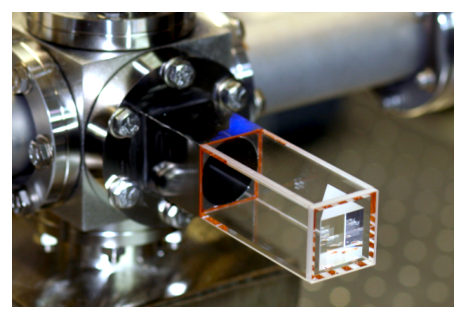
<figcaption class="paper-figure-caption"><b>Fig 4.</b> FIG. 4. Glass cell glued to titanium flange. The cell is a low- cost catalog part intended for spectroscopy applications. The custom machined titanium flange has a coefficient of thermal expansion matching that of the glass, enabling bakeout with limited mechanical stress at the interface. The cell-flange joint is a low-outgassing epoxy glue.</figcaption>
</figure>
<figure class="paper-figure-card">

<figcaption class="paper-figure-caption"><b>Fig 5.</b> FIG. 6. Simplified schematic of the blue laser system. Half- wave plates have been omitted for simplicity. DM: dichroic mirror, PD: photodiode, MIR: mirror, ISO: optical isolator, PBS: polarizing beam splitter, LP: low-pass filter, SG: sig- nal generator, SP: RF splitter, MX: RF mixer, FC: fiber cou- pler, PM: polarization-maintaining fiber, AOM: acousto-optic modulator, EOM: electro-optic modulator.</figcaption>
</figure>
</div>

<p><strong>Summary.</strong> This paper details the engineering and experimental realization of a compact, low-power apparatus for producing ultracold strontium atoms. By simplifying the vacuum system and optimizing the atomic beam path, the authors achieved high flux and successfully cooled the atoms through sequential Blue and Red Magneto-Optical Trapping (MOT) stages. This work advances the practical feasibility of using Sr atoms for quantum applications.</p>
<p><strong>Why it may be interesting.</strong> The focus on engineering simplicity and reliability in an atomic source is crucial for realizing complex quantum simulations, as robust sources are often the limiting factor in quantum technology demonstrations.</p>
<details>
<summary>Detailed structure</summary>
<p><strong>Main problem.</strong> To describe a compact and simplified experimental setup for the production of ultracold strontium atoms.</p>
<p><strong>Main result.</strong> The authors successfully developed a compact vacuum system with low power consumption, enabling the production of ultracold strontium atoms suitable for subsequent quantum experiments.</p>
<p><strong>Method.</strong> The experiment involves using a low-power oven and a coil-free Zeeman slower design to create a highly collimated atomic beam into a science cell.</p>
<p><strong>Model / system.</strong> The system is an atomic beam apparatus for Strontium (Sr), featuring an oven, Zeeman slower, and a science cell. It utilizes blue and red MOT stages for cooling, operating on the $1	ext{S}_0 - 1	ext{P}_1$ transition and subsequent red transitions.</p>
<p><strong>Key observables.</strong> Maximum atom number ($N_b \approx 1.5 	imes 10^7$ for Blue MOT; $N \approx 2 	imes 10^7$ after compression), final temperatures ($T \approx 2.4 	ext{ mK}$), and recapture fractions ($\approx 65\%$ for Red MOT).</p>
<p><strong>Important parameters / regimes.</strong> Oven power consumption ($\approx 13.5 	ext{ W}$), collimated flux ($3 \cdot 10^{10} 	ext{ atoms}\cdot	ext{s}^{-1}	ext{cm}^{-2}$), and MOT coil currents/gradients.</p>
<p><strong>Assumptions / limitations.</strong> The initial capillary angle is normal to the base surface, which is noted to reduce the atom flux compared to the desired $7^\circ$ angle.</p>
<p><strong>Figures summary.</strong> Figures illustrate the global and sectional views of the compact vacuum system (Fig. 1), temperature distributions (Fig. 3(a)), and optimization curves for atom number and recapture fraction versus experimental parameters (Figs. 8, 9, 10).</p>
<p><strong>Paper structure.</strong> The paper details the design improvements leading to a compact apparatus, characterizes the atomic beam properties, and then describes the sequential cooling stages: Blue MOT loading, compression, and Red MOT loading, culminating in final temperature measurements.</p>
</details>
<details>
<summary>Abstract</summary>
<p>We describe a compact and simplified experimental setup for the production of ultracold strontium atoms. Thanks to its low-power oven and coil-free Zeeman slower design, the vacuum system has an overall length of only 40cm including oven, Zeeman slower and all-glass science cell. The oven has a power consumption of 14W at 460°C and produces a collimated flux of 3 10^10at/(s cm^2) at this temperature. The laser system employs master-slave laser architecture throughout and requires neither second-harmonic generation nor tapered amplifiers, reducing cost and complexity. The system has been in continuous use for more than a year.</p>
</details>
<p><sub><a href="#top">↑ back to top</a></sub></p>

<p><a id="paper-2610.29998"></a></p>
<h3 id="generalized-coordinate-bethe-ansatz-and-quantum-integrability-of-the-time-dependent-massive-thirring-model"><a href="http://arxiv.org/abs/2610.29998v1">Generalized Coordinate Bethe Ansatz and Quantum Integrability of the Time-Dependent Massive Thirring Model</a></h3>
<p><strong>Authors:</strong> Parameshwar R. Pasnoori<br>
<strong>Type:</strong> theory · <strong>Category:</strong> statistical mechanics · <strong>PDF:</strong> <a href="https://arxiv.org/pdf/2610.29998v1">https://arxiv.org/pdf/2610.29998v1</a><br>
<strong>Analysis basis:</strong> full PDF text, analyzed in chunks
<strong>Topic relevance:</strong> <code>non-equilibrium universality</code> <strong>3/5</strong> · <code>Keldysh / 2PI / non-Gaussian methods</code> <strong>2/5</strong> · <code>analog quantum simulation</code> <strong>1/5</strong> · <code>driven-dissipative phase transition</code> <strong>1/5</strong> · <code>methods for driven-dissipative</code> <strong>1/5</strong></p>
<div class="figure-strip-hint">↔ Scroll figures horizontally</div>
<div class="paper-figures-scroll">
<figure class="paper-figure-card">

<figcaption class="paper-figure-caption"><b>Fig 1.</b> Figure 2. Schematic network of mathematical structures related to qKZ equations. One branch connects qKZ to DAHA/Macdonald theory, Ruijsenaars systems, and q-Whittaker functions, while a second proceeds through quantum-affine conformal blocks, q-Langlands duality, deformed W-algebra blocks, and q-Painlev´e τ-functions. The two branches meet naturally in the q-Toda/relativistic-Toda framework</figcaption>
</figure>
</div>

<p><strong>Summary.</strong> This work presents a generalized coordinate Bethe ansatz for the massive Thirring model with a time-varying mass. By developing a framework based on a unique rapidity lattice, the authors solve for the exact time-dependent many-body wavefunction. This provides a new, coordinate-space realization of the time-dependent integrability-RG correspondence.</p>
<p><strong>Why it may be interesting.</strong> The focus on time-dependent integrability and the connection to RG flow provides a powerful, non-equilibrium tool for analyzing quantum field theories, which has parallels in non-equilibrium dynamics studied in AMO and condensed matter.</p>
<details>
<summary>Detailed structure</summary>
<p><strong>Main problem.</strong> The paper develops a generalized coordinate Bethe-ansatz framework to solve the massive Thirring model when the fermion mass is explicitly time-dependent.</p>
<p><strong>Main result.</strong> The construction successfully yields the many-body wavefunction on a discrete rapidity lattice, establishing a novel coordinate route to the time-dependent integrability-RG correspondence.</p>
<p><strong>Method.</strong> The method involves constructing the wavefunction using a generalized coordinate Bethe ansatz, leading to scalar analytic difference equations of Ruijsenaars type.</p>
<p><strong>Model / system.</strong> The system is the massive Thirring model, characterized by a Hamiltonian containing a time-dependent fermion mass, $m_b(t)$. The analysis is performed on a circle of circumference L.</p>
<p><strong>Key observables.</strong> The complete time-dependent many-body wavefunction, and the exponential evolution of the bare mass, $m_b(t) = m^*e^{\kappa t}$.</p>
<p><strong>Important parameters / regimes.</strong> The time-dependent mass $m_b(t)$, the coupling constant $g_0$, and the rapidity lattice structure.</p>
<p><strong>Assumptions / limitations.</strong> The construction is fundamentally different from chiral theories because the mass term couples right- and left-moving components directly in the one-particle sector, necessitating the rapidity lattice.</p>
<p><strong>Paper structure.</strong> The paper builds the solution by first establishing the coordinate Bethe ansatz structure, deriving the two-particle S-matrix, and then using this to construct the full N-particle wavefunction on the rapidity lattice. It compares this to the static limit and relates the structure to known integrable formalisms.</p>
</details>
<details>
<summary>Abstract</summary>
<p>We develop a generalized coordinate Bethe-ansatz framework for the massive Thirring model with an explicitly time-dependent fermion mass. Unlike the generalized Bethe ansatz for chiral quantum field theories, where particle transport acts in internal spin spaces and leads to quantum Knizhnik-Zamolodchikov equations, the present construction acts directly on particle coordinates and physical rapidities. Its central new feature is a rapidity lattice. Because the time-dependent mass couples right- and left-moving components already in the one-particle sector, a fixed-rapidity block is not closed under spatial winding. Periodicity therefore requires all sectors generated by the finite shift $β\toβ-p$. Particle exchange relates amplitudes on this lattice through scalar analytic difference equations of Ruijsenaars type, whose solutions determine the complete time-dependent many-body wavefunction. Consistency of the coordinate construction also selects an exponential evolution of the bare mass, providing a new realization of the time dependent integrability-renormalization group correspondence. In the static limit, the rapidity-lattice construction reduces to the conventional massive-Thirring Bethe equations. Through the massive-Thirring/sine Gordon equivalence, the result also connects this exact quantum construction to the generalized space-time dependent Lax formalism.</p>
</details>
<p><sub><a href="#top">↑ back to top</a></sub></p>

<p><a id="paper-2610.29334"></a></p>
<h3 id="spin-resolved-momentum-distributions-and-vortex-evolution-in-multiphoton-pair-production-within-a-modified-two-level-model"><a href="http://arxiv.org/abs/2610.29334v1">Spin - resolved momentum distributions and vortex evolution in multiphoton pair production within a modified two-level model</a></h3>
<p><strong>Authors:</strong> Qi-Rong Wang, Hong-Hao Fan, Musajan Kadir, Ying Wu, Bai-Song Xie<br>
<strong>Type:</strong> theory · <strong>Category:</strong> other · <strong>PDF:</strong> <a href="https://arxiv.org/pdf/2610.29334v1">https://arxiv.org/pdf/2610.29334v1</a><br>
<strong>Analysis basis:</strong> full PDF text, analyzed in chunks
<strong>Topic relevance:</strong> <code>Keldysh / 2PI / non-Gaussian methods</code> <strong>3/5</strong> · <code>methods for driven-dissipative</code> <strong>3/5</strong> · <code>interference shaping light</code> <strong>2/5</strong></p>
<div class="figure-strip-hint">↔ Scroll figures horizontally</div>
<div class="paper-figures-scroll">
<figure class="paper-figure-card">

<figcaption class="paper-figure-caption"><b>Fig 1.</b> FIG. 1. Electric fields for LCP (a), RCP (b), and LP (c). The red and green solid curves denote the Ex</figcaption>
</figure>
<figure class="paper-figure-card">

<figcaption class="paper-figure-caption"><b>Fig 2.</b> FIG. 2. Spin-resolved momentum distributions fs,s′ and phase distributions ϕs,s′ for the spin configurations</figcaption>
</figure>
<figure class="paper-figure-card">

<figcaption class="paper-figure-caption"><b>Fig 3.</b> FIG. 3. Electric fields for LLCP at time delays of T = 0 (a), Tp (b), and 2Tp (c). The red and green solid</figcaption>
</figure>
<figure class="paper-figure-card">

<figcaption class="paper-figure-caption"><b>Fig 4.</b> FIG. 4. Spin-resolved momentum distributions fs,s′ and phase distributions ϕs,s′ for LLCP. Columns 1</figcaption>
</figure>
<figure class="paper-figure-card">

<figcaption class="paper-figure-caption"><b>Fig 5.</b> FIG. 5. Electric fields for RLCP at time delays of T = 0 (a), Tp (b), and 2Tp (c). The red and green solid</figcaption>
</figure>
</div>

<p><strong>Summary.</strong> This theoretical work examines how the polarization and time delay of intense laser pulses control the topological properties, specifically quantized vortices, generated during multiphoton pair production. By using a modified two-level model, the authors show that these external parameters enable coherent control over the angular momentum structure of the created electron-positron pairs.</p>
<p><strong>Why it may be interesting.</strong> The connection between external field geometry (polarization/time delay) and the topological structure (vortices) of quantum particle creation is highly relevant to non-perturbative quantum optics and strong-field physics.</p>
<details>
<summary>Detailed structure</summary>
<p><strong>Main problem.</strong> The paper investigates the spin-resolved momentum distributions and the formation and evolution of phase vortices during multiphoton electron-positron pair production.</p>
<p><strong>Main result.</strong> The polarization state (circular vs. linear) and the time delay between two pulses allow for coherent control over the topological structure (vortex topology) of the pair production process.</p>
<p><strong>Method.</strong> The analysis uses a modified two-level model (mTLM) derived from the Dirac equation in the presence of a strong, time-dependent external electromagnetic field.</p>
<p><strong>Model / system.</strong> The system is pair production in a strong external electric field, modeled by the Dirac equation solved via a two-level approximation. The model incorporates spinor inner-product terms neglected in simpler adiabatic treatments.</p>
<p><strong>Key observables.</strong> Spin-resolved momentum distributions ($f_{s,s'}(\mathbf{p})$), topological charge ($l_{s,s'}$), and the phase distribution ($\phi_{s,s'}$).</p>
<p><strong>Important parameters / regimes.</strong> Pulse polarization (LCP, RCP, LP), time delay ($T$), and the strength of the external field.</p>
<p><strong>Assumptions / limitations.</strong> The external field is assumed to be spatially homogeneous, and the analysis often sets $p_z=0$ for primary results.</p>
<p><strong>Figures summary.</strong> Figures illustrate the electric fields for various polarizations (LCP, RCP, LP) and show the resulting spin-resolved momentum and phase distributions for different pulse configurations and time delays.</p>
<p><strong>Paper structure.</strong> The paper builds from the general Dirac equation formalism to derive the two-level evolution equations (mTLM). It then analyzes specific polarization cases (single pulse, two pulses) to demonstrate how polarization and time delay control the resulting topological features.</p>
</details>
<details>
<summary>Abstract</summary>
<p>We investigate spin-resolved momentum distributions and phase vortices in multiphoton electron-positron pair production within a modified two-level model. This model retains the diagonal spinor inner-product terms neglected in the adiabatic approximation, thereby inducing spin-resolved transverse asymmetries in the momentum distribution. For a circularly polarized pulse, the handedness determines the winding direction of the quantized vortices, whereas for a linearly polarized pulse, the phase distribution exhibits nodal lines rather than quantized vortices. For two time-delayed circularly polarized pulses, the time delay introduces a relative phase that governs the multiphoton interference, which in turn drives the vortex evolution in each spin configuration. These results demonstrate that pulse polarization and time delay enable coherent control over vortex topology in pair production.</p>
</details>
<p><sub><a href="#top">↑ back to top</a></sub></p>

<p><a id="paper-2610.29862"></a></p>
<h3 id="quenched-disorder-in-polymerized-membranes-from-anomalous-elasticity-to-a-glassy-phase"><a href="http://arxiv.org/abs/2610.29862v1">Quenched disorder in polymerized membranes: from anomalous elasticity to a glassy phase</a></h3>
<p><strong>Authors:</strong> D. Mouhanna<br>
<strong>Type:</strong> theory · <strong>Category:</strong> disordered systems and neural networks · <strong>PDF:</strong> <a href="https://arxiv.org/pdf/2610.29862v1">https://arxiv.org/pdf/2610.29862v1</a><br>
<strong>Analysis basis:</strong> full PDF text, analyzed in chunks
<strong>Topic relevance:</strong> <code>non-equilibrium universality</code> <strong>3/5</strong> · <code>Keldysh / 2PI / non-Gaussian methods</code> <strong>2/5</strong> · <code>Frenkel-Kontorova</code> <strong>1/5</strong> · <code>driven-dissipative phase transition</code> <strong>1/5</strong></p>
<div class="figure-strip-hint">↔ Scroll figures horizontally</div>
<div class="paper-figures-scroll">
<figure class="paper-figure-card">

<figcaption class="paper-figure-caption"><b>Fig 1.</b> FIG. 1. Schematic RG topology of the quenched metric–curvature disorder problem. The dashed curve represents the critical separatrix, i.e. the stable manifold of the finite-temperature fixed point Pc; the arrows drawn along it indicate that RG trajectories on the separatrix flow toward Pc. The solid trajectories leaving Pc represent the flow along its relevant direction, toward either the thermal fixed point P4 or the disorder-dominated fixed point P5. The two sides of the separatrix define the thermal and glassy basins of attraction, respectively. The temperature and disorder axes are schematic, and the drawing does not represent the actual multidimensional coupling space.</figcaption>
</figure>
</div>

<p><strong>Summary.</strong> This work reviews the theoretical understanding of polymerized membranes under quenched disorder, predicting a continuous wrinkling transition between a smooth, thermally stable phase and a glassy, disorder-dominated phase. Using advanced Renormalization Group techniques, the authors map three distinct physical regimes onto three corresponding fixed points ($P_4, P_c, P_5$). The strong quantitative agreement between these theoretical exponents and experimental measurements makes this a key theoretical benchmark for disordered soft matter physics.</p>
<p><strong>Why it may be interesting.</strong> The study of phase transitions driven by quenched disorder, especially the identification of a continuous transition point ($P_c$) separating thermal and glassy regimes, is highly relevant to understanding disordered quantum many-body systems.</p>
<details>
<summary>Detailed structure</summary>
<p><strong>Main problem.</strong> The paper investigates how quenched random disorder modifies the anomalous elasticity of polymerized membranes, potentially driving the system into a glassy phase.</p>
<p><strong>Main result.</strong> A continuous wrinkling transition is predicted between a thermally dominated flat phase and a disorder-dominated glassy phase, characterized by a novel fixed point ($P_c$).</p>
<p><strong>Method.</strong> The analysis employs advanced field-theoretical techniques, including perturbative and nonperturbative Renormalization Group (RG) methods.</p>
<p><strong>Model / system.</strong> The system is a polymerized membrane (e.g., lipid membranes, graphene) whose elasticity is governed by bending rigidity and in-plane moduli, coupled to random metric and curvature disorder.</p>
<p><strong>Key observables.</strong> Height fluctuation power spectrum exponent ($\gamma$), anomalous elastic moduli ($\kappa_{	ext{eff}}(q)$), and the existence of multiple RG fixed points ($P_4, P_c, P_5$).</p>
<p><strong>Important parameters / regimes.</strong> Temperature, polymerization degree, and the strength of quenched disorder.</p>
<p><strong>Assumptions / limitations.</strong> The analysis relies on mapping the physical system onto a field theory framework and using RG techniques to identify stable fixed points.</p>
<p><strong>Paper structure.</strong> The paper reviews the theoretical framework, first establishing the disorder-free flat phase physics ($P_4$), then incorporating disorder to find the critical point ($P_c$), and finally characterizing the low-temperature, disorder-dominated glassy phase ($P_5$).</p>
</details>
<details>
<summary>Abstract</summary>
<p>Polymerized membranes are paradigmatic fluctuating systems in which geometry, elasticity, and statistical fluctuations combine to produce anomalous long-distance behavior. In the disorder-free flat phase, bending rigidity increases at long wavelengths while in-plane elastic moduli soften. Quenched random metric and curvature introduce competing thermal and disorder-induced fluctuations. We review perturbative and nonperturbative field-theoretical approaches to these systems, from pure membranes to their disordered counterparts. Early one-loop studies identified a disorder-free fixed point, $P_4$, and a zero-temperature disorder-dominated fixed point, $P_5$. A subsequent nonperturbative renormalization-group analysis revealed a third fixed point, $P_c$, at finite temperature and disorder, governing a continuous wrinkling transition between the thermally dominated flat phase and a disorder-dominated glassy phase. Higher-order perturbative calculations also recover a $P_c$-like fixed point, with anomalous dimensions remarkably close to the reexpanded nonperturbative predictions. This scenario connects naturally with the wrinkling transition observed in partially polymerized lipid membranes. The three experimental scaling regimes of height fluctuations can be associated with $P_4$, $P_c$, and $P_5$, with theoretical exponents showing good quantitative agreement with measurements, particularly at criticality. Finally, we discuss the status of the glassy scenario, the unresolved discrepancy between perturbative and nonperturbative fixed-point stability predictions, and possible extensions to defective graphene and related two-dimensional crystalline materials.</p>
</details>
<p><sub><a href="#top">↑ back to top</a></sub></p>

<p><a id="paper-2610.29696"></a></p>
<h3 id="quantum-f-divergences-from-retrodiction-a-unifying-classical-variational-principle"><a href="http://arxiv.org/abs/2610.29696v1">Quantum f-divergences from retrodiction: a unifying classical variational principle</a></h3>
<p><strong>Authors:</strong> Francesco Buscemi<br>
<strong>Type:</strong> theory · <strong>Category:</strong> quantum information and computing · <strong>PDF:</strong> <a href="https://arxiv.org/pdf/2610.29696v1">https://arxiv.org/pdf/2610.29696v1</a><br>
<strong>Analysis basis:</strong> full PDF text, analyzed in chunks
<strong>Topic relevance:</strong> <code>quantum measurements</code> <strong>3/5</strong> · <code>Keldysh / 2PI / non-Gaussian methods</code> <strong>2/5</strong></p>
<div class="figure-strip-hint">↔ Scroll figures horizontally</div>
<div class="paper-figures-scroll">
<figure class="paper-figure-card">

<figcaption class="paper-figure-caption"><b>Fig 1.</b> Figure 1: Admissible forward (a) and reverse (b) processes. The upper wire retains the preparation label, so both records have the order (i, j). Matching colours pair preparation and measurement by Petz transposition relative to γ; the identities below the circuits give the prescribed averages. Double lines carry classical labels and single lines quantum states.</figcaption>
</figure>
</div>

<p><strong>Summary.</strong> This paper unifies the study of quantum f-divergences by showing they can all be derived from a single variational principle based on comparing forward and reverse process records. By introducing a tunable reference prior state, the authors demonstrate a continuous path (geodesic) connecting various established quantum divergences. This provides a powerful, operational tool for characterizing quantum information measures.</p>
<p><strong>Why it may be interesting.</strong> This work provides a deep, operational variational framework for quantifying quantum distinguishability, which is fundamental to understanding quantum process characterization, resource theories, and information geometry in open quantum systems.</p>
<details>
<summary>Detailed structure</summary>
<p><strong>Main problem.</strong> The paper seeks to determine if all quantum extensions of a classical f-divergence can be derived from a single, common operational variational principle.</p>
<p><strong>Main result.</strong> Varying a reference prior state allows for a continuous interpolation between standard, maximal, and geodesic quantum f-divergences, providing a unified variational characterization.</p>
<p><strong>Method.</strong> The authors generalize Matsumoto's reverse-test optimization by minimizing the classical f-divergence between forward and reverse 'prepare-and-measure' process records, subject to quantum average constraints.</p>
<p><strong>Model / system.</strong> The analysis is performed on quantum states (density operators) in a finite dimension, modeling preparation and measurement processes using weighted Positive Operator-Valued Measure (POVM) resolutions.</p>
<p><strong>Key observables.</strong> The minimum statistical distinguishability, quantified by the classical f-divergence $D_f(R\|F)$, and the resulting quasi-entropy $V_f(
ho, \sigma; \gamma)$.</p>
<p><strong>Important parameters / regimes.</strong> The prescribed average states ($
ho, \sigma, \gamma$), the choice of reference state ($\gamma$), and the operator-convex function $f$ defining the divergence.</p>
<p><strong>Assumptions / limitations.</strong> The analysis assumes faithful states in finite dimension and that the record retains complete information to avoid trivial zero minima.</p>
<p><strong>Figures summary.</strong> Figure 1 illustrates the admissible forward and reverse processes, while Figure 2 shows the reduction from two preparation channels to a single reverse test structure.</p>
<p><strong>Paper structure.</strong> The paper builds from defining the minimum f-divergence for records, showing how varying the reference state interpolates between different quantum divergences (standard, maximal, geodesic), and finally extending the framework to include intermediate quantum channels.</p>
</details>
<details>
<summary>Abstract</summary>
<p>The same classical f-divergence admits inequivalent extensions to quantum states. The question is whether these extensions can be obtained from a common operational variational principle. Here we generalize Matsumoto's reverse-test optimization by introducing a reference prior state. More explicitly, we minimize the statistical distinguishability between a forward and a reverse prepare-and-measure process, related by retrodiction through the chosen reference and subject to prescribed quantum averages. Distinguishability is quantified by the classical f-divergence between their complete records. For faithful states in finite dimension, we prove that the same spectral implementation attains the minimum simultaneously for every operator-convex f. Varying the reference allows us to interpolate between standard and maximal quantum f-divergences of the prescribed states, passing through the geodesic family. More precisely, a flat reference yields the standard quantum f-divergences, thereby giving the Nussbaum-Szkoła distributions a variational characterization as optimal records. Choosing either prescribed state as reference recovers maximal quantum f-divergences and Matsumoto's reverse tests, while power references realize the geodesic interpolation. In the relative-entropy case, this gives the passage from Umegaki to Belavkin-Staszewski relative entropy by changing the prior for retrodiction.</p>
</details>
<p><sub><a href="#top">↑ back to top</a></sub></p>

<p><a id="paper-2610.29916"></a></p>
<h3 id="stabilizing-and-detecting-electron-fractionalization-in-the-hofstadter-hubbard-model"><a href="http://arxiv.org/abs/2610.29916v1">Stabilizing and detecting electron fractionalization in the Hofstadter-Hubbard model</a></h3>
<p><strong>Authors:</strong> Jiahao Yang, Zeyu Han, Gang v. Chen<br>
<strong>Type:</strong> theory · <strong>Category:</strong> strongly correlated electrons · <strong>PDF:</strong> <a href="https://arxiv.org/pdf/2610.29916v1">https://arxiv.org/pdf/2610.29916v1</a><br>
<strong>Analysis basis:</strong> full PDF text, analyzed in chunks
<strong>Topic relevance:</strong> <code>analog quantum simulation</code> <strong>3/5</strong> · <code>Keldysh / 2PI / non-Gaussian methods</code> <strong>2/5</strong></p>
<div class="figure-strip-hint">↔ Scroll figures horizontally</div>
<div class="paper-figures-scroll">
<figure class="paper-figure-card">

<figcaption class="paper-figure-caption"><b>Fig 1.</b> FIG. 1. Triangular-lattice Hofstadter–Hubbard model, mean-field phase diagrams, and representative bond configurations. (a) The external flux Φext △through the highlighted triangle. Aext ij denotes the bond Peierls phase. The arrows specify the circulation. (b) Phase diagram versus U/t for Φext △= π/2, π/4, and π/6. Blue, yellow, and green denote the Chern insulator (CI), U(1)2 chiral spin liquid (CSL), and valence-bond solid (VBS), respectively. The boundaries follow from energy comparisons among nonmagnetic mean-field states. (c) CSL with uniform kinetic-bond strength and nonzero spinon triangle flux. Circular arrows indicate loop orientation, not charge currents. (d) Plaquette VBS with a...</figcaption>
</figure>
<figure class="paper-figure-card">

<figcaption class="paper-figure-caption"><b>Fig 2.</b> Fig. 1(a). The Hamiltonian is given by</figcaption>
</figure>
<figure class="paper-figure-card">

<figcaption class="paper-figure-caption"><b>Fig 3.</b> FIG. 2. Electron removal spectral function Ae(k, ω) in the CSL at U/t = 4 for external flux per triangle (a) Φext △ = π/2 (left) and (b) Φext △ = π/6 (right). High-symmetry cuts follow Γ–X–M–Y –Γ within the respective two-site and six- site magnetic Brillouin zones (see insets). Both the weakly dispersing ridges and the broad continuum features signify a loss of quasiparticle coherence driven by the Mott transition.</figcaption>
</figure>
<figure class="paper-figure-card">

<figcaption class="paper-figure-caption"><b>Fig 4.</b> FIG. 3. Densities of states at external flux per triangle Φext △= π/2 (left column) and π/6 (right column) for spinons (a,b), rotors (c,d), and physical electrons (e,f). Solid and dashed curves correspond to the CSL at U/t = 4 and the CI at U/t = 1, respectively. The rotor panels contain only the CSL result, whose pole weights are positive on both sides of ω = 0. For the CSL, the electron DOS follows from the site- resolved convolution of the spinon and rotor spectra (Sec. SIII of the SM [56]), whereas for the CI only the coherent contri- bution ZNf(ω) is shown.</figcaption>
</figure>
</div>

<p><strong>Summary.</strong> This theoretical study analyzes electron fractionalization in the Hofstadter-Hubbard model on a triangular lattice under an external magnetic flux. Using a slave-rotor mean-field approach, the authors show that the magnetic flux stabilizes a U(1)2 chiral spin liquid (CSL) phase. The key diagnostic tool is the electron spectral function, which reveals distinct convolution patterns in the CSL compared to other correlated phases.</p>
<p><strong>Why it may be interesting.</strong> The explicit link between topological band structure (Chern insulators) and intrinsic topological order in the correlated regime, mediated by fractionalization, is highly relevant to understanding exotic quantum states in strongly correlated materials.</p>
<details>
<summary>Detailed structure</summary>
<p><strong>Main problem.</strong> The paper investigates how noninteracting band topologies evolve under strong correlations, specifically focusing on electron fractionalization in the Mott insulating regime.</p>
<p><strong>Main result.</strong> Increasing the orbital magnetic flux stabilizes and broadens the U(1)2 chiral spin liquid (CSL) phase, which is characterized by distinct spectral signatures derived from the convolution of spinon and chargon excitations.</p>
<p><strong>Method.</strong> The study employs a self-consistent slave-rotor mean-field theory to decompose the electron operator into fractionalized spinon and rotor components.</p>
<p><strong>Model / system.</strong> The system is the half-filled triangular-lattice Hofstadter-Hubbard model, analyzed in the presence of an external magnetic flux ($\Phi_{ext}$). The Hamiltonian is studied across various competing non-magnetic states like Chern Insulator (CI), CSL, and Valence-Bond Solid (VBS).</p>
<p><strong>Key observables.</strong> Electron spectral function $A_e(k, \omega)$, local density of states $
ho_e(\omega)$, topological invariants (Chern number), and condensate weight ($Z$).</p>
<p><strong>Important parameters / regimes.</strong> Orbital flux ($\Phi_{ext}^{	riangle}$), interaction strength ($U/t$), and filling factor (half-filled case).</p>
<p><strong>Assumptions / limitations.</strong> The analysis relies on slave-rotor mean-field theory and neglects residual vertex corrections when calculating the electron propagator.</p>
<p><strong>Figures summary.</strong> Figures illustrate mean-field phase diagrams mapping out CI, CSL, and VBS regions as a function of flux and interaction strength. Spectral functions show characteristic multi-peak structures in the CSL, contrasting with the coherent contribution in the CI.</p>
<p><strong>Paper structure.</strong> The paper progresses by first establishing the model and the fractionalization ansatz, then calculating ground-state energies and phase diagrams comparing CI, CSL, and VBS. Finally, it analyzes the spectral properties by calculating the electron Green function as a convolution of spinon and rotor propagators to distinguish the phases.</p>
</details>
<details>
<summary>Abstract</summary>
<p>Motivated by the recent progress in correlated Chern insulator physics in moiré systems, we investigate the half-filled triangular-lattice Hofstadter--Hubbard model and its electron fractionalization. Among various competing non-magnetic states, increasing the orbital flux stabilizes and broadens the $\mathrm{U}(1)_2$ chiral spin liquid phase in the Mott regime. In this exotic regime, the electron is fractionalized into gapped spinons and gapped chargons, whose effective bands are linked to the orbital flux. The convolution of the narrow spinon bands with the gapped chargon excitations produces rich and discernible structures in the electron spectral function and the density of states. These results not only identify the orbital flux as a control parameter for the detailed patterns of electron fractionalization and the nature of the Mott transition, but also provide the key spectral characteristics for the angle-resolved photoemission and scanning tunneling studies of the relevant systems, linking the free-particle band topology to intrinsic topological order in the correlated regime.</p>
</details>
<p><sub><a href="#top">↑ back to top</a></sub></p>

<p><a id="paper-2610.28748"></a></p>
<h3 id="codecoder-make-quantum-decoders-up-to-100x-faster-and-even-more-accurate"><a href="http://arxiv.org/abs/2610.28748v1">CoDecoder: Make Quantum Decoders Up to 100x Faster and Even More Accurate</a></h3>
<p><strong>Authors:</strong> Yicheng Guang, Yuliang Xiong, Xun Gao, Yueqi Chen<br>
<strong>Type:</strong> both · <strong>Category:</strong> quantum information and computing · <strong>PDF:</strong> <a href="https://arxiv.org/pdf/2610.28748v1">https://arxiv.org/pdf/2610.28748v1</a><br>
<strong>Analysis basis:</strong> full PDF text, analyzed in chunks
<strong>Topic relevance:</strong> <code>QC/QI experiment</code> <strong>3/5</strong> · <code>quantum measurements</code> <strong>1/5</strong></p>
<div class="figure-strip-hint">↔ Scroll figures horizontally</div>
<div class="paper-figures-scroll">
<figure class="paper-figure-card">

<figcaption class="paper-figure-caption"><b>Fig 1.</b> FIG. 1. CoDecoder and a strong decoder as a composition, shown for one shot. ❶CoDecoder reads the shot’s detector bits and returns its decision y∗and a confidence. ❷The confidence is compared with the threshold τ. ❸If it reaches τ, CoDecoder’s decision is the answer. ❹Otherwise, the strong decoder decodes the shot from its original detector bits, which happens for a fraction q of all shots. The strong decoder is a black box. It can be a neural decoder such as Cascade on the GPU, or correlated matching or Relay-BP on the CPU. ❺A joint decision can combine CoDecoder’s class scores with the strong decoder’s logits on the routed shots where they differ (dashed).</figcaption>
</figure>
<figure class="paper-figure-card">

<figcaption class="paper-figure-caption"><b>Fig 2.</b> FIG. 2. Output-head geometry. (a) At d = 5, surface-code line j and the observable’s line (obs.) differ by the dark X stabilizers, whose detectors give δj. The cube shows the detector grid and stem footprint. (b) On the BB72 torus, translating a logical operator ℓa (black) by g = x2y (vermillion) wraps around the torus and changes its logical class. Arrows identify periodic edges.</figcaption>
</figure>
<figure class="paper-figure-card">

<figcaption class="paper-figure-caption"><b>Fig 3.</b> FIG. 3. Surface-code accuracy and decoding time at p = 0.6 %. Each panel plots logical error rate against composite time per shot on the Grace basis. Dotted lines intersect at CoDecoder + correlated PM. Open diamonds show CoDecoder alone (q = 0), coinciding with the composition at d = 11 and 13. Crosses mark Decoder Switching at its frozen routed fraction, and its curves vary this fraction from 1 % to the frozen value. BP-OSD points exceeding the time range are placed at the right edge. The 95 % Wilson intervals are smaller than the markers.</figcaption>
</figure>
<figure class="paper-figure-card">

<figcaption class="paper-figure-caption"><b>Fig 4.</b> FIG. 4. Block failure rate against composite time per shot on the BB codes, with 95 % Wilson intervals. CoDecoder and its compositions are vermillion, with hollow circles for CoDecoder alone, diamonds for CoDecoder + sector Relay-BP and squares for CoDecoder + full-DEM Relay-BP. The two Relay-BP decoders alone are blue, as every fallback is in the figures of this paper. CPU work is on the Grace basis and GPU work on the H100, timed in a registered timing session. Table IV lists every count and time.</figcaption>
</figure>
<figure class="paper-figure-card">

<figcaption class="paper-figure-caption"><b>Fig 5.</b> FIG. 5. Error complementarity versus CoDecoder’s confi- dence percentile (exploratory test shots). The ordinate is CoDecoder’s failure share among shots on which exactly one decoder fails, with Wilson 95 % intervals. Vertical lines mark routing thresholds and the grey line marks 50 %. Fallbacks are (a) correlated PM at d = 13 (solid) and 17 (dashed), and (b) our Cascade on BB72 at p = 0.2 % (solid) and 0.3 % (dashed).</figcaption>
</figure>
</div>

<p><strong>Summary.</strong> This paper introduces CoDecoder, a neural network frontend designed to accelerate and improve the accuracy of quantum error decoding for fault-tolerant quantum computers. By intelligently composing its predictions with a slower, more robust fallback decoder, it achieves substantial speed-ups (up to 124x) and significant reductions in failure rates across various quantum codes. This work is crucial for making large-scale, reliable quantum computation feasible.</p>
<p><strong>Why it may be interesting.</strong> It directly addresses the critical engineering bottleneck of scaling quantum computation by providing a pathway to faster, more reliable error correction decoding.</p>
<details>
<summary>Detailed structure</summary>
<p><strong>Main problem.</strong> Developing quantum decoders that are both fast enough for real-time operation and accurate enough to maintain fault tolerance in quantum computers.</p>
<p><strong>Main result.</strong> The proposed CoDecoder frontend significantly improves error correction by reducing failure rates by up to 50% and achieving speed-ups of up to 124-fold compared to existing methods.</p>
<p><strong>Method.</strong> A novel composition technique where a small neural network frontend predicts the logical outcome for high-confidence shots, routing uncertain shots to a more robust, existing fallback decoder.</p>
<p><strong>Model / system.</strong> The work is situated in the context of fault-tolerant quantum computation, utilizing stabilizer codes such as surface codes and bivariate-bicycle (BB) codes.</p>
<p><strong>Key observables.</strong> Failure rate (reduction percentage), mean decoding time (speed-up factor), and the performance of joint decision-making on routed shots.</p>
<p><strong>Important parameters / regimes.</strong> Code distance ($d=7-17$), noise probabilities, and the confidence threshold ($   au$) used for routing decisions.</p>
<p><strong>Assumptions / limitations.</strong> The composition's success relies on the frontend making fewer errors than the fallback on retained shots, and the saved fallback work exceeding the frontend overhead.</p>
<p><strong>Figures summary.</strong> Figures illustrate the composition process (CoDecoder reading bits and deciding whether to use its prediction or route to the fallback) and compare failure rates across different code types and decoders.</p>
<p><strong>Paper structure.</strong> The paper introduces the problem of fast, accurate decoding, details the CoDecoder composition logic (frontend + fallback), presents quantitative results comparing performance against benchmarks like Cascade, and analyzes the gains from joint decision-making.</p>
</details>
<details>
<summary>Abstract</summary>
<p>Fault-tolerant quantum computers need fast and accurate error decoding. We present CoDecoder, a small neural frontend that composes with an existing decoder to improve accuracy and reduce mean decoding time. It predicts each shot's logical outcome, retains confident predictions and routes the remaining shots to the unchanged fallback. A logical-operator-aware output head scores shifted logical operators, combining equivalent logical lines on surface codes and deciding logical qubits jointly on bivariate-bicycle (BB) codes. Fused GPU inference and efficient routing reduce the overhead paid on every shot. In registered tests under circuit-level noise, composition reduces failures by 6.4-31.4% relative to correlated matching on surface codes of distance 7-17 and by 22-50% relative to full-DEM Relay-BP on two BB codes, with 2.3-124-fold speed-ups across these comparisons. With our re-implementations of the neural decoder Cascade, composition reduces decoding time in all four settings. A joint decision of both decoders on the routed shots keeps this speed and makes the composition more accurate than Cascade in all four, with 14-18% fewer failures on the [[72,12,6]] code. On the [[72,12,6]] BB code, a conventional head with independent logical outputs fails 3.8-5.0 times as often as our joint class score under matched training conditions. Per-shot analysis shows how composition gains accuracy. On retained shots, the frontend corrects more fallback errors than it introduces, even when it is less accurate overall.</p>
</details>
<p><sub><a href="#top">↑ back to top</a></sub></p>

<p><a id="paper-2610.29635"></a></p>
<h3 id="confirmation-of-complex-non-collinear-feii-spin-ordering-in-the-iron-oxychalcogenide-lamath284mathomath285mathfemath286mathosemath287math-by-broad-range-math288mathla-nqr"><a href="http://arxiv.org/abs/2610.29635v1">Confirmation of complex non-collinear Fe(II) spin ordering in the iron oxychalcogenide La$_2$O$_2$Fe$_2$OSe$_2$ by broad range $^{139}$La-NQR</a></h3>
<p><strong>Authors:</strong> Tillmann Weinhold, Jerin Abraham George, Cornelius Herrmann, Domenic Nowak, Rajib Sarkar, Felix Seewald, Rowena Wachtel, Sabine Wurmehl, Bernd Büchner, Hans-Henning Klauss<br>
<strong>Type:</strong> experiment · <strong>Category:</strong> strongly correlated electrons · <strong>PDF:</strong> <a href="https://arxiv.org/pdf/2610.29635v1">https://arxiv.org/pdf/2610.29635v1</a><br>
<strong>Analysis basis:</strong> full PDF text, analyzed in chunks
<strong>Topic relevance:</strong> <code>quantum measurements</code> <strong>3/5</strong> · <code>analog quantum simulation</code> <strong>1/5</strong></p>
<div class="figure-strip-hint">↔ Scroll figures horizontally</div>
<div class="paper-figures-scroll">
<figure class="paper-figure-card">

<figcaption class="paper-figure-caption"><b>Fig 1.</b> FIG. 2: Magnetic structure of La2O2Fe2OSe2 as determined by G¨unther et al. [9] and McCabe et al. [16]. The atoms are colored as in Figure 1. Red arrows indicate the direction of iron moments below TN. Black arrows at the La sites indicate the direction of the dipolar magnetic field ⃗B at the La positions induced by the iron moments. Two different La sites are present in the ordered phase due to different magnetic field strength and direction. These La sites are labeled as La 1 and La 2, consistent with the labeling by G¨unther et al. [9] and Hussain et al. [17].</figcaption>
</figure>
<figure class="paper-figure-card">

<figcaption class="paper-figure-caption"><b>Fig 2.</b> FIG. 3: 139La NQR spectra of La2O2Fe2OSe2 at different temperatures. The base line of each spectrum is shifted by a factor that reflects the evolution of temperature. The dashed gray horizontal line marks the ordering temperature of TN ≈90 K. The open circles mark the peak positions of the NQR signals found by Hussain et al. [17]. The dashed bright orange and dark orange lines indicate the expected peak positions according to the model described in section IV. and introduced by G¨unther et al. [9] for site La 1 and La 2, respectively.</figcaption>
</figure>
<figure class="paper-figure-card">

<figcaption class="paper-figure-caption"><b>Fig 3.</b> FIG. 4: Simulation of the NQR resonance positions for the case of a magnetic field being (a) parallel to the main component of the EFG corresponding to site La 2 in Figure 2 and (b) perpendicular to the main component of the EFG corresponding to site La 1 in Figure 2. Parameters used are νQ = 3.147 MHz and γ139La = 6.06 MHz T−1. The relative intensities of the various resonance peaks (color-coded as in the vertical bars) have been approximated by calculating the peak intensities for 2000 random orientations of the rf excitation pulse. Dashed black lines indicate the strength of magnetic field expected at the specified temperature.</figcaption>
</figure>
<figure class="paper-figure-card">

<figcaption class="paper-figure-caption"><b>Fig 4.</b> FIG. 5: Local magnetic hyperfine field BHyp at the 57Fe position measured by M¨ossbauer spectroscopy. Black upwards facing triangles are data published by G¨unther et al. [9]. Grey downwards facing triangles are measured on the sample used in this work. The red line corresponds to a phenomenological order parameter function (see text).</figcaption>
</figure>
</div>

<p><strong>Summary.</strong> This work uses zero-field $^{139}	ext{La-NQR}$ spectroscopy to confirm the complex non-collinear antiferromagnetic spin ordering in La2O2Fe2OSe2 below 90 K. By analyzing the temperature dependence of the NQR resonances, the authors confirm the magnetic structure deduced from other techniques, providing detailed spectroscopic evidence of the magnetic interactions in this correlated material.</p>
<p><strong>Why it may be interesting.</strong> The use of NQR spectroscopy to probe subtle changes in the local electronic environment induced by complex magnetic ordering in a Mott insulator is highly relevant for understanding emergent quantum states in correlated materials.</p>
<details>
<summary>Detailed structure</summary>
<p><strong>Main problem.</strong> To confirm the complex non-collinear Fe(II) spin ordering in the iron oxychalcogenide La2O2Fe2OSe2 using zero-field NQR measurements.</p>
<p><strong>Main result.</strong> The measured NQR resonances are fully consistent with the proposed non-collinear magnetic structure, confirming the magnetic ordering below T_N. The analysis rules out significant changes in the electric field gradient at the La-site below T_N.</p>
<p><strong>Method.</strong> Zero-field $^{139}	ext{La-NQR}$ measurements were performed across a broad temperature and frequency range, comparing results with previous Mössbauer and NMR data.</p>
<p><strong>Model / system.</strong> The physical system is the transition metal oxychalcogenide La2O2Fe2OSe2, which exhibits spin-ice like antiferromagnetic ordering due to Fe2+ spin interactions. The analysis uses a Hamiltonian framework to model the interaction between the nuclear quadrupole moment and the local magnetic field.</p>
<p><strong>Key observables.</strong> NQR resonance frequencies ($
u_Q, 2
u_Q, 3
u_Q$), Electric Field Gradient (EFG) at the La-position, and the magnetic saturation field.</p>
<p><strong>Important parameters / regimes.</strong> Néel temperature (T_N ≈ 90 K); Temperature range (4.2-100 K); Frequency range (2.8-20 MHz).</p>
<p><strong>Assumptions / limitations.</strong> The magnetic field at the La_1 site is assumed to be much smaller than the field at the La_2 site, and the temperature dependence of the hyperfine field is proportional to the magnetic field at the iron position.</p>
<p><strong>Figures summary.</strong> Figure 1 shows the unit cell structure, and Figure 2 illustrates the deduced non-collinear magnetic structure, identifying two distinct La sites (La 1 and La 2).</p>
<p><strong>Paper structure.</strong> The paper establishes the magnetic background and then presents the NQR measurements, showing consistency with the magnetic structure. It then uses detailed simulations based on the Hamiltonian to analyze the temperature dependence of the resonance peaks, confirming the magnetic field parameters at different La sites.</p>
</details>
<details>
<summary>Abstract</summary>
<p>The transition metal oxychalcogenide La$_2$O$_2$Fe$_2$OSe$_2$ exhibits a non-collinear spin-ice like antiferromagnetic ordering below $T_N \approx $ 90 K due to complex magnetic exchange interactions and axial single-ion anisotropy of Fe$^{2+}$ spins. The magnetic structure was deduced/determined from combined $^{57}$Fe Mössbauer spectroscopy and $^{139}$La-NMR on polycrystalline specimen. In this work, we present zero-field $^{139}$La-NQR investigations on polycrystalline La$_2$O$_2$Fe$_2$OSe$_2$ in a broad frequency and temperature range between 2.8 - 20 MHz and 4.2 - 100 K. The measured resonances at $ν_Q$, $2 \, ν_Q$, and $3 \, ν_Q$ are fully consistent with the previous NMR studies and also with the magnetic structure. A substantial modification of the electric field gradient at the La-position below $T_N$ is inconsistent with the current investigations.</p>
</details>
<p><sub><a href="#top">↑ back to top</a></sub></p>

<p><a id="paper-2610.30081"></a></p>
<h3 id="anyonwikiorg"><a href="http://arxiv.org/abs/2610.30081v1">AnyonWiki.org</a></h3>
<p><strong>Authors:</strong> Colleen Delaney, Ralph Razzouk, Joost Slingerland, Gert Vercleyen<br>
<strong>Type:</strong> theory · <strong>Category:</strong> other · <strong>PDF:</strong> <a href="https://arxiv.org/pdf/2610.30081v1">https://arxiv.org/pdf/2610.30081v1</a><br>
<strong>Analysis basis:</strong> full PDF text, analyzed in chunks
<strong>Topic relevance:</strong> <code>analog quantum simulation</code> <strong>3/5</strong></p>
<div class="figure-strip-hint">↔ Scroll figures horizontally</div>
<div class="paper-figures-scroll">
<figure class="paper-figure-card">

<figcaption class="paper-figure-caption"><b>Fig 1.</b> Figure 1: Venn diagram of the number of multiplicity-free fusion categories up to rank 7 with certain properties on the AnyonWiki. By definition, the ribbon fusion categories belong to the intersection of the braided and spherical squares. Each number indi- cates the number of fusion categories that lie in the connected region of the Venn diagram. There are thus, e.g., 0 fusion categories with no compatible extra struc- tures (since all the categories found admit a pivotal structure), 31 pivotal fusion categories with no compatible extra structures, 185 ribbon fusion categories that are neither modular nor unitary, 109 fusion categories that are modular and uni- tary, 229 fusion categories...</figcaption>
</figure>
</div>

<p><strong>Summary.</strong> This paper introduces the AnyonWiki, an open-source project providing a comprehensive database of fusion rings and fusion categories. It serves as a crucial resource for classifying topological matter models, such as those exhibiting anyonic excitations. By standardizing and digitizing this complex data, the project significantly aids theoretical research in topological quantum field theories and condensed matter physics.</p>
<p><strong>Why it may be interesting.</strong> The classification of anyons and topological phases is central to understanding exotic quantum matter, making the underlying mathematical framework highly relevant to condensed matter theory.</p>
<details>
<summary>Detailed structure</summary>
<p><strong>Main problem.</strong> The project aims to create an accessible, verifiable, and usable resource for the complex algebraic and numerical data associated with fusion and unitary modular fusion categories.</p>
<p><strong>Main result.</strong> The AnyonWikiDatabase currently catalogs over 25,000 fusion rings and includes classifications of multiplicity-free pivotal fusion categories up to rank 7.</p>
<p><strong>Method.</strong> The data is managed in an open-source database structure (JSON files) and presented via a dedicated website, adhering to FAIR data principles for reproducibility.</p>
<p><strong>Model / system.</strong> The underlying mathematical structures are fusion categories and fusion rings, which provide a framework for classifying anyons and defects in gapped topological phases of matter and TQFTs.</p>
<p><strong>Key observables.</strong> Fusion coefficients, F-symbols, R-symbols, S-matrix, and Frobenius–Perron dimensions.</p>
<p><strong>Important parameters / regimes.</strong> Rank of the fusion category (up to 10 for rings), and the specific algebraic properties (e.g., pivotal, braided, unitary) of the category.</p>
<p><strong>Assumptions / limitations.</strong> The data structure is designed to be expandable, and contributions require linking data to a DOI or detailed software dictionary.</p>
<p><strong>Figures summary.</strong> Figure 1 illustrates the count of fusion categories up to rank 7 possessing various structural properties (pivotal, braided, etc.), while Table 1 shows the count of available fusion rings by rank and multiplicity.</p>
<p><strong>Paper structure.</strong> The article discusses the scientific motivation for the database, details the contents and structure of the AnyonWikiDatabase, and outlines contribution guidelines for maintaining data integrity.</p>
</details>
<details>
<summary>Abstract</summary>
<p>The AnyonWiki is an open-source project that provides full algebraic and numerical data of fusion and unitary modular fusion categories as a resource for the scientific community. It comes with a database, the AnyonWikiDatabase, that currently includes the classification of multiplicity-free pivotal (braided) fusion categories through rank 7 and more than 25000 fusion rings including the classification of multiplicity-free fusion rings through rank 10, with work in progress to expand. This data is available through AnyonWiki.org, a website that provides robust search and download functionality and presents each fusion ring and category via a dedicated webpage. In this short article we discuss the data available at AnyonWiki.org as well as the scientific and communal motivations for the design of its underlying AnyonWikiDatabase, which are centered around making the data accessible, independently verifiable, granularly citable, useful, and easy to work with.</p>
</details>
<p><sub><a href="#top">↑ back to top</a></sub></p>
<hr>
<p>
<a href="index.html">← Index</a>
 · <a href="papers_01.html">← Previous</a> · <a href="papers_03.html">Next →</a>
</p>
<hr>

</body>
</html>
